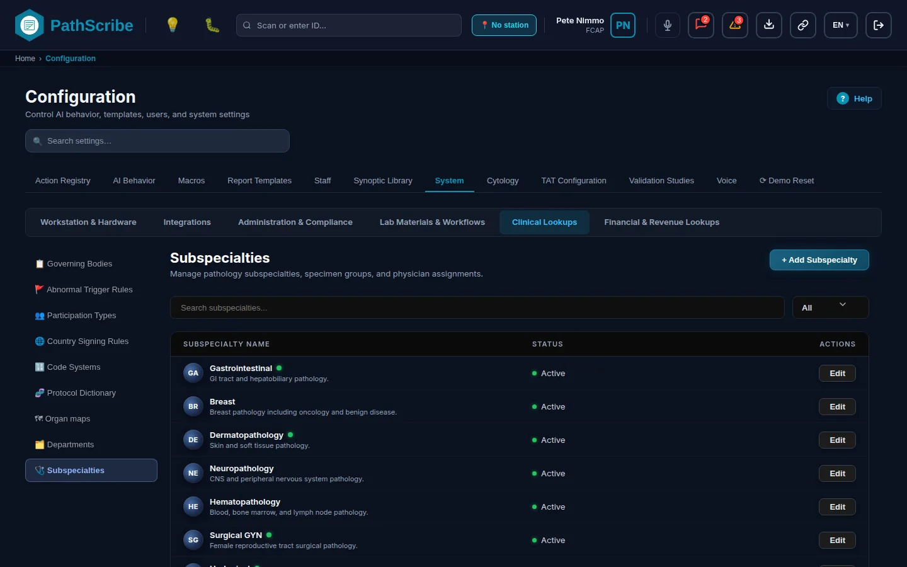
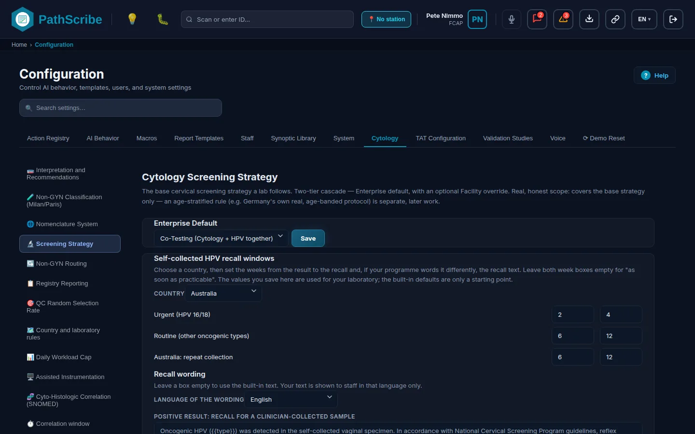
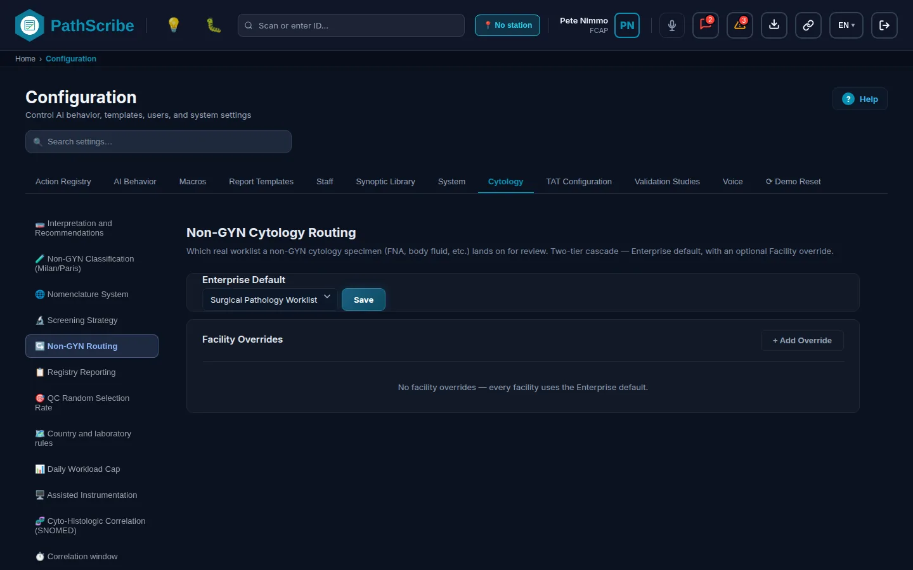
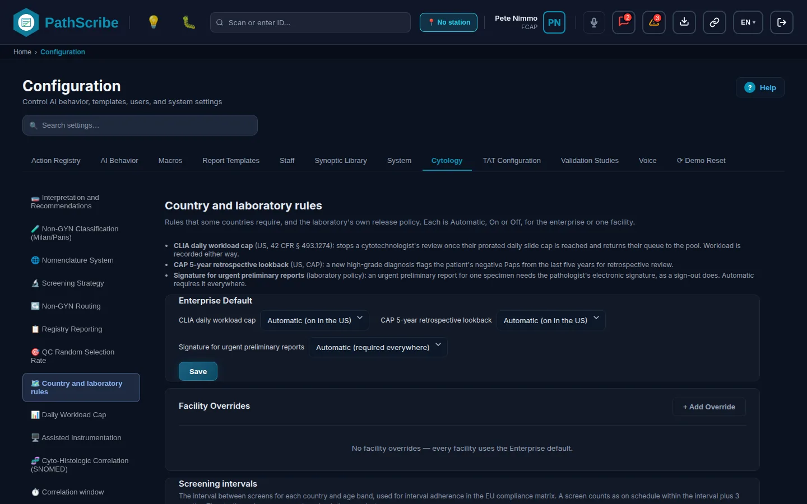
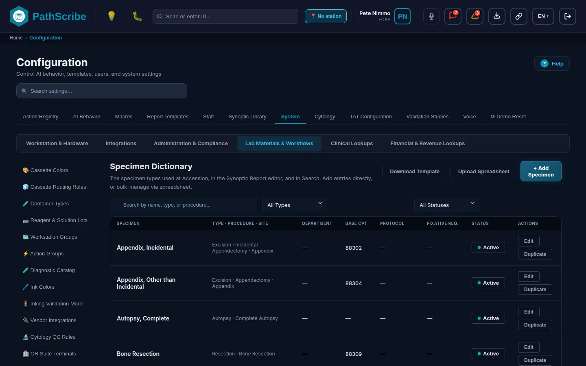
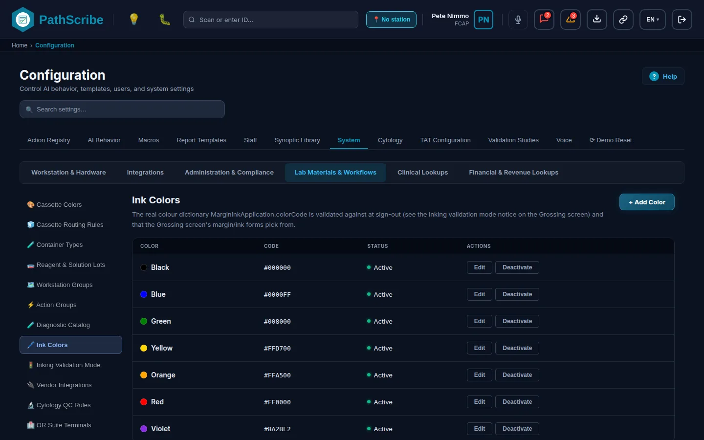

# Tier 2: Master Dictionaries and Clinical Foundational Data (Configure Second)
Tier 2 is the set of lists the laboratory's daily work picks from: departments, specimen types, stains, protocols, containers, cassette colours, physicians, client service levels and the code and classification lists used on reports. None of these lists works alone. A specimen type points at a department, a subspecialty and a protocol. A cassette rule points at a protocol and a colour. A client service level points at a client facility. This is why Tier 2 comes after Tier 1 (the facilities, people and devices in Chapter 2) and has its own order.
Configure Tier 2 in the order below. Each screen carries a Setup sequence box with the same information, and the builder checks that no screen requires one that comes after it.
- Governing Bodies: the standards bodies and their retention figures. ForMedrixAI internal only.
- Code Systems: which diagnosis code systems are off, optional or required in each country, and the licences you hold.
- Terminology Services: a health check of the code-search services.
- Code Import (Bulk): a CSV import of billing codes.
- Departments: the coarse classification of a specimen at intake.
- Subspecialties: the pathology work groups and their routing.
- Diagnostic Catalog: stains, antibodies, molecular tests, sectioning protocols and quick-order macros.
- Protocol Dictionary: the processing workflow for a specimen.
- Container Types: the containers specimens arrive in.
- Specimen Dictionary: the specimen types, tying the lists above together.
- Flags: case and specimen flags.
- Asset Location Dictionary: named physical locations and mortuary storage slots.
- Cold Chain: storage units, condition types and temperature readings.
- Specimen Deficiencies: deficiency and resolution types.
- Organ maps: colours, patterns and question bindings for the anatomical maps.
- Cassette Colors: the colour dictionary.
- Cassette Routing Rules: which colour a cassette gets.
- Ink Colors: the margin ink colours.
- Reagent & Solution Lots: lot, expiry and QC status of reagents.
- Physicians: ordering and submitting physicians.
- Facility Configuration: client accounts (the same screen as the Facility Dictionary).
- Client service levels: turnaround promises per client.
- Abnormal Trigger Rules: the field and value pairs that flag a case.
- Cytology tab: the landing page for the cytology settings.
- Nomenclature System: which reporting system cytology uses.
- Interpretation and Recommendations: the cytology category lists.
- Non-GYN Classification (Milan/Paris): salivary and urinary categories.
- Screening Strategy: co-testing or HPV-first, and recall windows.
- Non-GYN Routing: which worklist a non-gynaecological case goes to.
- Country and laboratory rules: workload cap, look-back, urgent signature and screening intervals.
- Assisted Instrumentation: whole slide imaging or traditional review.
- Cyto-Histologic Correlation (SNOMED): the SNOMED severity ranks used in correlation.
The parts below follow the subject, not the setup order: Part A the anatomic pathology specialties, Part B specimens and tissue, Part C containers, cassettes and ink, Part D stains and protocols, Part E code libraries, and Part F physicians, clients and governing bodies.
Status words. Each screen shows one of the five status words from the authoring standard: Built, Demonstration, Partial, Planned, Not built. Almost every dictionary in this chapter has a production service and a written API contract, so most are Built. The exceptions are named on the screen: the Organ maps settings and the Code Systems policy are kept in the browser only, and the Cold Chain readings are simulated.
What every dictionary screen shares.
- A change needs the screen's own config:...:manage capability. Without it you can open the screen and see the data, but the controls are greyed out. The capabilities in this chapter are marked high risk, so every check (allowed or refused) is written to the audit log.
- Most dictionaries here are held per performing lab or Global (every lab). A name or code must be unique inside one lab, or inside Global.
- Most lists do not delete. A row is made Inactive, which keeps every record that already uses it.
- A name or code that arrives from an order and matches nothing creates an Unverified row (Departments, Physicians, Asset Locations and Facilities do this). The row works, but someone should check it and select Verify.
# Part A: Anatomic Pathology Specialties
This part holds the screens that set up the laboratory's departments and work groups, and the Cytology tab. PathScribe does not have one "specialty" screen. The five anatomic pathology specialties are set up through several screens that are listed here, so the table says for each one what exists and what does not.
| Specialty | What you can configure today | What does not exist |
|---|---|---|
| Surgical pathology | The Surgical Tissue department and its default grossing template; the SURGICAL_TISSUE specimen category on the Specimen Dictionary; organ maps and the protocol and cassette dictionaries in Parts B to D. | A separate "surgical pathology" settings screen. |
| Cytopathology | The Fluid / Cytology department; the GYN_CYTOLOGY and NON_GYN_CYTOLOGY specimen categories; the whole Cytology tab (eight screens in this chapter and four more in Chapters 4 and 8). | None. This is the only specialty with its own settings tab. |
| Dermatopathology | A subspecialty named Dermatopathology (seeded), and a built-in case routing rule that sends skin keywords to it. Mohs micrographic surgery stage maps are part of the organ maps. | A dermatopathology department, specimen category or settings screen. |
| Hematopathology | A subspecialty named Hematopathology (seeded), and a built-in case routing rule that sends haematology keywords to it. | A hematopathology department, specimen category or settings screen. |
| Autopsy | The AUTOPSY specimen category on the Specimen Dictionary; mortuary storage slots and an occupancy view on the Asset Location Dictionary; autopsy sectioning protocols in the Protocol Dictionary; the AUTOPSY workstation group discipline (Workstation Groups); and the AUTOPSY_PAD and AUTOPSY_FAD turnaround target types on the TAT Configuration tab. | An autopsy tab or an autopsy-specific maintenance screen. |
The built-in case routing rules that use these subspecialties are on Routing Rules (Chapter 4).
# Departments
Status: Built
1. Navigation: Configuration tab System > group Clinical Lookups 2. Maintenance item: Departments
3. Business purpose and scope. A department is the coarse classification of a specimen at intake: for example Surgical Tissue, Fluid / Cytology, Histology-Only / Consultation. It decides which grossing template a case starts with, whether the department keeps records for a different length of time than the jurisdiction's default, and which laboratory director and accreditation number print in its report header. The Case Mask link on the edit window takes you to Case Mask Configuration, where the department's accession number mask is set.
4. Prerequisites and dependencies. The retention override is checked against the floor set on Governing Bodies for the current jurisdiction. If no body has a retention figure for the jurisdiction, there is no floor to check against. The list of grossing templates is fixed in the product (three choices), so it does not depend on another screen. Departments are read by the Specimen Dictionary (each specimen type names a department), by the Protocol Dictionary (a new protocol in a fluid department starts as a decant track) and by order intake, which creates an Unverified department when an order names one that does not exist.
5. Screen.

6. Field reference.
List page
| Field Name | Data Type / Format | Required/Optional | Description & Business Logic | System Default |
|---|---|---|---|---|
| Search | Text | Optional | Narrows the list by department name. | Blank |
| Status filter | Choice: All, Active, Inactive, Unverified | Optional | Unverified departments were created automatically from an order. | All |
| Department column | Text | Not applicable | Name and description. | Not applicable |
| Default Grossing Template column | Text | Not applicable | The grossing route the department starts on. | Not applicable |
| Case Mask column | Text | Not applicable | Shows "DEFINED" followed by the mask when the department has one on Case Mask Configuration. | Not applicable |
| Retention Override column | Text | Not applicable | The override days per material type, if any. | Not applicable |
| Status column | Text | Not applicable | Active, Inactive or Unverified. An auto-created note shows when the department came from an order. | Not applicable |
| + Add Department | Button | Not applicable | Opens the edit window with a blank department. | Not applicable |
| Verify | Row button | Not applicable | Shown for Unverified departments only. Marks the department as checked. | Not applicable |
| Edit | Row button | Not applicable | Opens the edit window. | Not applicable |
Add and edit window
| Field Name | Data Type / Format | Required/Optional | Description & Business Logic | System Default |
|---|---|---|---|---|
| Name | Text | Required | The department's name as staff see it at accessioning. | None |
| Description | Free text | Optional | What kinds of specimen belong here. | None |
| Default Grossing Template | Choice: Standard Tissue, Fluid / Cell Block, Histology-Only | Required | The grossing route a case in this department starts on. The three choices are fixed. They are stored as grossing_standard_tissue, grossing_fluid_cytology and grossing_histology_only. |
Standard Tissue |
| Case Mask | Link (edit only) | Not applicable | Opens Case Mask Configuration. | Not applicable |
| Status | Active / Inactive switch | Optional | An inactive department is not offered at intake. If Specimen Dictionary entries still name the department, a Department still in use window asks you to confirm with Deactivate Anyway. Those entries are not changed. | Active |
| Retention Override: Block, Slide, Wet tissue | Whole number of days above 0, one box per material type | Optional | A blank box uses the jurisdiction default. A value below the governing-body floor opens a confirmation window (below). | Blank |
| Laboratory Director Name | Text | Optional | Report-header branding for this department. The fallback is the facility, then the enterprise. | Blank |
| CLIA / ISO Accreditation Number | Text | Optional | Same fallback. | Blank |
| Header Logo URL | https link | Optional | A hosted image address. Only the address is stored, never the image. Must start with https. |
Blank |
Below-floor confirmation window
| Field Name | Data Type / Format | Required/Optional | Description & Business Logic | System Default |
|---|---|---|---|---|
| Justification | Free text | Required | Why this department keeps records for less time than the governing-body floor. | None |
| Confirm Below-Floor Override | Button | Not applicable | Saves the override and writes the audit event "Retention Override Below Floor". | Not applicable |
7. Permissions. Open the screen: screen:configuration:open. Add, edit, verify, deactivate: config:departments:manage (high risk, audited). Admin, Lab Director and Superadmin hold it by default. A person without it sees the screen view-only.
Known limits. The only reference check on deactivation is the Specimen Dictionary. The department's grossing template list is fixed at three choices and cannot be extended. Seeded departments are Surgical Tissue, Fluid / Cytology, Histology-Only / Consultation and an Unverified, auto-created Frozen Section.
# Subspecialties
Status: Built
1. Navigation: Configuration tab System > group Clinical Lookups 2. Maintenance item: Subspecialties
3. Business purpose and scope. A subspecialty is a pathology work group such as GI, Breast, Dermatopathology or Hematopathology. Each one can be a workgroup (cases are assigned to named pathologists) or a pool (any member may claim a case). A subspecialty owns a list of specimen types, a list of pathologists and residents, and a list of facilities. Routing rules send cases to it, and the slide-distribution quick picker lists the active ones. A system-managed pool named General Pathology is the fallback for cases that match nothing else.
4. Prerequisites and dependencies. The Physicians tab lists staff whose role is Pathologist or Resident, and the Facilities tab lists active facilities. Create both in Tier 1 first (Members, Facility Dictionary), or those tabs are empty. Specimen types can be linked here, or later from the Specimen Dictionary editor, where each specimen type names one subspecialty. A specimen type can belong to only one subspecialty.
5. Screen.

6. Field reference.
List page
| Field Name | Data Type / Format | Required/Optional | Description & Business Logic | System Default |
|---|---|---|---|---|
| Search | Text | Optional | Narrows by subspecialty name. | Blank |
| Status filter | Choice: All, Active, Inactive | Optional | All | |
| Subspecialty Name column | Text | Not applicable | Name with a workgroup dot, a SYSTEM badge for the system-managed pool, the description and the performing lab. | Not applicable |
| Status column | Text | Not applicable | Active or Inactive. | Not applicable |
| Edit | Row button | Not applicable | Opens the edit window. The system-managed pool shows Read-only instead. | Not applicable |
| System Live Sync footer | Text | Not applicable | A count of the subspecialties shown. | Not applicable |
Edit window: left pane
| Field Name | Data Type / Format | Required/Optional | Description & Business Logic | System Default |
|---|---|---|---|---|
| Name | Text | Required | Unique for the performing lab, or across everything when the subspecialty is Global. | None |
| Status | Active / Inactive switch | Optional | Inactivating asks for confirmation (below). Reactivating shows a notice that the earlier links are not restored. | Active |
| Assignment Mode | Choice: workgroup or pool | Required | Workgroup: cases are assigned to named pathologists. Pool: any member of the pool may claim a case. Pool claims are enforced when a case is claimed or accepted. | Workgroup |
| Performing Lab | Choice: Global or an active performing lab | Optional | Offered for a pool. Scopes the name, and the catch-all flag, to that lab. | Global |
| Catch-all | Check box | Optional | At most one subspecialty per lab scope is the catch-all. Saving moves the flag off the previous holder. | Off |
| Description | Free text | Optional | None |
Edit window: right pane
| Field Name | Data Type / Format | Required/Optional | Description & Business Logic | System Default |
|---|---|---|---|---|
| Specimens tab | Check list of Specimen Dictionary entries | Optional | Ticking an entry writes this subspecialty onto the specimen type. An entry that already belongs to another subspecialty shows "Currently in: X". | None ticked |
| Physicians tab | Check list of staff with the Pathologist or Resident role | Optional | The members of the work group. | None ticked |
| Facilities tab | Check list of active facilities | Optional | The facilities the work group serves. Stored as the subspecialty's client list. | None ticked |
| Footer summary | Text | Not applicable | Counts of the specimens, physicians and facilities ticked. | Not applicable |
Inactivate confirmation window
| Field Name | Data Type / Format | Required/Optional | Description & Business Logic | System Default |
|---|---|---|---|---|
| Impact list | Text | Not applicable | Lists the specimens that will be unlinked, the physicians that will be unassigned, the TAT Configuration entries still scoped to it and the routing rules still targeting it. | Not applicable |
| Inactivate & Unlink | Button | Not applicable | Inactivates the subspecialty and removes the specimen and physician links. The TAT entries and routing rules are listed but not changed. | Not applicable |
7. Permissions. Open: screen:configuration:open. Add, edit, inactivate: config:subspecialties:manage (high risk, audited). Admin, Lab Director and Superadmin hold it by default. A person without it sees the screen view-only.
Known limits. Seeded subspecialties are GI, Breast, Dermatopathology, Neuro, Hematopathology, Surgical GYN, Uro, Thoracic, an Oncology pool and the system-managed General Pathology pool. Inactivating a subspecialty does not remove the routing rules or TAT entries that still name it. Fix those on their own screens.
# Cytology tab
Status: Built
1. Navigation: Configuration tab Cytology 2. Maintenance item: Cytology settings (a sidebar of twelve sections)
3. Business purpose and scope. The Cytology tab holds every setting that is specific to cytopathology. It is a sidebar of twelve sections. Eight are documented in this chapter, three (QC settings, workload cap and histology correlation) in Chapter 4, and one (the registry) in Chapter 8. Each section checks its own capability. A person without it sees the section view-only. Moving between sections with unsaved changes asks you to confirm first.
| Sidebar label | Screen |
|---|---|
| Interpretation and Recommendations | Interpretation and Recommendations |
| Non-GYN Classification (Milan/Paris) | Non-GYN Classification |
| Nomenclature System | Nomenclature System |
| Screening Strategy | Screening Strategy |
| Non-GYN Routing | Non-GYN Routing |
| Country and laboratory rules | Country and laboratory rules |
| Assisted Instrumentation | Assisted Instrumentation |
| Cyto-Histologic Correlation (SNOMED) | Cyto-Histologic Correlation (SNOMED) |
| QC settings | Chapter 4 |
| Workload cap | Chapter 4 |
| Histology correlation | Chapter 4 |
| Registry | Chapter 8 |
4. Prerequisites and dependencies. The tab itself needs nothing. Its facility overrides list the facilities from the Facility Dictionary, so set that up first.
5. Screen.

6. Field reference.
| Field Name | Data Type / Format | Required/Optional | Description & Business Logic | System Default |
|---|---|---|---|---|
| Sidebar | List of twelve sections | Not applicable | Selecting a section opens it on the right. A section whose capability you lack opens view-only. | First section |
| Unsaved-change prompt | Confirmation window | Not applicable | Appears when you leave a section with unsaved edits. | Not applicable |
7. Permissions. Open: screen:configuration:open. Each section lists its own capability. Admin, Lab Director and Superadmin hold the cytology capabilities by default, with one exception named on Country and laboratory rules.
Known limits. None known.
# Nomenclature System
Status: Built
1. Navigation: Configuration tab Cytology > sidebar Nomenclature System 2. Maintenance item: Nomenclature System
3. Business purpose and scope. Chooses the cytology reporting system the laboratory uses. The enterprise has one default and any facility can have its own. The choice decides which category list the cytotechnologist and pathologist see when they interpret a case.
4. Prerequisites and dependencies. The facility list for overrides comes from the Facility Dictionary. Skip it and + Add Override has no facility to pick. The category lists for each system are edited on Interpretation and Recommendations.
5. Screen.

6. Field reference.
| Field Name | Data Type / Format | Required/Optional | Description & Business Logic | System Default |
|---|---|---|---|---|
| Enterprise Default | Choice: Bethesda, BSCC/RCPath, München III, SFCC (French-labelled Bethesda), PALGA CISOE-A | Required | Used by every facility without its own override. Save writes it. | Bethesda |
| + Add Override | Button | Not applicable | Opens a row to pick a facility and a system. | Not applicable |
| Facility (override row) | Picklist of facilities | Required | The facility the override is for. | None |
| System (override row) | Choice of the same five systems | Required | The reporting system that facility uses. | None |
| Remove | Row button | Not applicable | Removes the override. The facility goes back to the enterprise default. | Not applicable |
7. Permissions. Open: screen:configuration:open. Change: config:cytology-nomenclature:manage (high risk, audited). Admin, Lab Director and Superadmin hold it by default.
Known limits. PALGA CISOE-A can be chosen here, but Interpretation and Recommendations has no category editor for it.
# Interpretation and Recommendations
Status: Built
1. Navigation: Configuration tab Cytology > sidebar Interpretation and Recommendations 2. Maintenance item: Interpretation and Recommendations (the cytology category dictionary)
3. Business purpose and scope. Holds the category lists a cytology report is built from, for the chosen nomenclature system: specimen adequacy, general categorisation, interpretation or result, and recommendations. Each entry says whether a pathologist must review it before sign-out and what severity it suggests to abnormal detection. The Bethesda list is the master. The SFCC view is a read-only copy of Bethesda with the French text.
4. Prerequisites and dependencies. Set the system in use on Nomenclature System first, so you edit the list people will see. The suggested severity is read by the clinical mismatch check and by abnormal detection when a case is signed out. Skip this screen and the built-in lists are used.
5. Screen.

6. Field reference.
Page controls
| Field Name | Data Type / Format | Required/Optional | Description & Business Logic | System Default |
|---|---|---|---|---|
| Nomenclature System | Choice: Bethesda, BSCC/RCPath, München III, SFCC | Required | The list being edited. SFCC is read-only and derived from Bethesda. PALGA CISOE-A is not offered here. | Bethesda |
| Section tabs | Tabs: Specimen Adequacy, General Categorization, Interpretation / Result, Recommendations | Required | Each tab is one category list. | Specimen Adequacy |
| Show inactive | Check box | Optional | Includes deactivated categories. | Off |
| + Add Category | Button | Not applicable | Opens the Add window. Hidden for SFCC. | Not applicable |
| Export French Translations CSV | Button | Not applicable | Downloads the Bethesda list with its French text. The export is written to the audit log. | Not applicable |
| Import French Translations CSV | Button | Not applicable | Reads French text back by category Id. | Not applicable |
| Row chips | Text | Not applicable | Pathologist Review, the suggested severity, Inactive and a "built-in" tag. | Not applicable |
| Deactivate / Reactivate | Row button | Not applicable | Changes the Active flag. | Not applicable |
| Edit | Row button | Not applicable | Opens the Edit window. | Not applicable |
Add and edit window
| Field Name | Data Type / Format | Required/Optional | Description & Business Logic | System Default |
|---|---|---|---|---|
| Label | Text | Required | The category as shown on the report. | None |
| French Label (SFCC) | Text | Optional | Bethesda only. Feeds the SFCC view. | Blank |
| Abbreviation | Text | Optional | Blank | |
| Group | Choice | Optional | Interpretation / Result tab only. Groups the entry. | None |
| Description | Free text | Optional | Blank | |
| French Description | Free text | Optional | Bethesda only. | Blank |
| Requires pathologist review before sign-out | Check box | Optional | A cytotechnologist cannot sign out a case with this category alone. | Off |
| Suggested Abnormal-Detection Severity | Choice: none, Abnormal, Critical, Malignant | Optional | A suggestion to abnormal detection. A match is always confirmed or disputed by the pathologist. | None |
| Active | Check box | Optional | On |
Reactive Changes Policy card (Bethesda only)
| Field Name | Data Type / Format | Required/Optional | Description & Business Logic | System Default |
|---|---|---|---|---|
| Reactive changes: who signs out | Status text: cytotechnologist, mixed or pathologist | Not applicable | Shows the current setting for the reactive-change entries. | Cytotechnologist |
| Let a cytotechnologist sign out | Button | Not applicable | Clears the review requirement on the reactive-change entries (those whose id starts cyto-nonneo-reactive-). |
Not applicable |
| Require a pathologist | Button | Not applicable | Sets the review requirement on the same entries. Applies to new reviews only. | Not applicable |
7. Permissions. Open: screen:configuration:open. Change, including the two policy buttons: config:cytology-categories:manage (high risk, audited). Admin, Lab Director and Superadmin hold it by default.
Known limits. The window does not show three stored properties (usage, diagnosticRank and isUnsatisfactory). The French CSV import matches by Id and does not add new categories.
# Non-GYN Classification (Milan/Paris)
Status: Built
1. Navigation: Configuration tab Cytology > sidebar Non-GYN Classification (Milan/Paris) 2. Maintenance item: Non-GYN Classification
3. Business purpose and scope. Holds the numbered diagnostic categories of the two non-gynaecological reporting systems: the Milan System (salivary gland) and the Paris System (urinary tract). Each category has a number, a label and an optional risk of malignancy.
4. Prerequisites and dependencies. Standalone. The categories appear on the non-GYN cytology report. Skip it and the built-in categories are used.
5. Screen.

6. Field reference.
Page controls
| Field Name | Data Type / Format | Required/Optional | Description & Business Logic | System Default |
|---|---|---|---|---|
| System buttons | Choice: Milan (salivary), Paris urinary | Required | The list being edited. | First system |
| Show inactive | Check box | Optional | Off | |
| + Add Category | Button | Not applicable | Opens the Add window. | Not applicable |
| Deactivate / Reactivate | Row button | Not applicable | Not applicable | |
| Edit | Row button | Not applicable | Not applicable |
Add and edit window
| Field Name | Data Type / Format | Required/Optional | Description & Business Logic | System Default |
|---|---|---|---|---|
| Category Number | Whole number | Required | The category's number in the system. | None |
| Label | Text | Required | None | |
| Abbreviation | Text | Optional | Blank | |
| Description | Free text | Optional | Blank | |
| Risk of Malignancy % | Number, 0 to 100 | Optional | Shown beside the category. | Blank |
| Requires pathologist review | Check box | Optional | On |
7. Permissions. Open: screen:configuration:open. Change: config:cytology-categories:manage (high risk, audited), the same capability as Interpretation and Recommendations. Admin, Lab Director and Superadmin hold it by default.
Known limits. None known.
# Screening Strategy
Status: Built
1. Navigation: Configuration tab Cytology > sidebar Screening Strategy 2. Maintenance item: Screening Strategy
3. Business purpose and scope. Sets how cervical screening is done (co-testing, HPV first, or cytology only), for the enterprise and for each facility, and holds the recall windows and recall wording for Australia and New Zealand.
4. Prerequisites and dependencies. The facility list for overrides comes from the Facility Dictionary. The recall windows card is saved inside the strategy settings, so the same permission applies.
5. Screen.

6. Field reference.
Strategy
| Field Name | Data Type / Format | Required/Optional | Description & Business Logic | System Default |
|---|---|---|---|---|
| Enterprise default | Choice: Co-Testing, Primary HPV Reflex to Cytology, Cytology Only | Required | Used by every facility without an override. | Co-Testing |
| + Add Override | Button | Not applicable | Opens a row to pick a facility and a strategy. | Not applicable |
| Facility override | Picklist plus the same three choices | Required | None | |
| Remove | Row button | Not applicable | Removes the override. | Not applicable |
Recall windows card
| Field Name | Data Type / Format | Required/Optional | Description & Business Logic | System Default |
|---|---|---|---|---|
| Country | Choice: Australia, New Zealand | Required | The country whose windows and wording you edit. The choice is disabled while the form has unsaved changes. | Australia |
| Urgent (HPV 16/18): From, To | Whole weeks, 1 to 52 | Optional | The first box cannot be later than the second. Both empty means "as soon as practicable". | 2 to 4 weeks |
| Routine: From, To | Whole weeks, 1 to 52 | Optional | Same rules. | 6 to 12 weeks |
| Repeat collection: From, To | Whole weeks, 1 to 52 | Optional | Shown as the Australia window or the New Zealand window for the chosen country. | Australia 6 to 12 weeks, New Zealand empty |
| Language | Choice: English, French, German, Dutch, Korean, Spanish | Required | The language of the wording you edit. | English |
| Wording: clinician LBC recall | Free text, up to 1000 characters | Optional | Empty uses the built-in text. Only the placeholders {{type}} and {{next}} are allowed. |
Blank |
| Wording: repeat collection | Free text, up to 1000 characters | Optional | Empty uses the built-in text. No placeholders are allowed. | Blank |
| Save | Button | Not applicable | Saves the windows and wording. Audited as RECALL_SETTINGS_CHANGED. |
Not applicable |
| Discard changes | Button | Not applicable | Reverts the card to the saved values. | Not applicable |
| Restore defaults | Button | Not applicable | Puts the built-in windows back in the form. Select Save to keep them. | Not applicable |
7. Permissions. Open: screen:configuration:open. Change: config:cytology-screening-strategy:manage (high risk, audited). Admin, Lab Director and Superadmin hold it by default.
Known limits. An age-based screening rule exists in the service but has no screen. Recall windows exist for Australia and New Zealand only.
# Non-GYN Routing
Status: Built
1. Navigation: Configuration tab Cytology > sidebar Non-GYN Routing 2. Maintenance item: Non-GYN Routing
3. Business purpose and scope. Decides which worklist a non-gynaecological cytology case goes to: the Surgical Pathology Worklist or the Cytology Worklist. Gynaecological cases always go to the Cytology Worklist.
4. Prerequisites and dependencies. Overrides use the facility list from the Facility Dictionary. The non-GYN specimen category on the Specimen Dictionary decides which cases this applies to.
5. Screen.

6. Field reference.
| Field Name | Data Type / Format | Required/Optional | Description & Business Logic | System Default |
|---|---|---|---|---|
| Enterprise default | Choice: Surgical Pathology Worklist, Cytology Worklist | Required | Where non-GYN cases go unless a facility override applies. | Surgical Pathology Worklist |
| + Add Override | Button | Not applicable | Opens a row to pick a facility and a worklist. | Not applicable |
| Facility override | Picklist plus the two choices | Required | None | |
| Remove | Row button | Not applicable | Not applicable |
7. Permissions. Open: screen:configuration:open. Change: config:cytology-routing:manage (high risk, audited). Admin, Lab Director and Superadmin hold it by default.
Known limits. None known.
# Country and laboratory rules
Status: Built
1. Navigation: Configuration tab Cytology > sidebar Country and laboratory rules 2. Maintenance item: Country and laboratory rules
3. Business purpose and scope. Switches three country-specific cytology controls on or off for the enterprise and for each facility, and holds the screening interval rules by country. The controls do what they say. They do not by themselves make a laboratory meet a standard.
4. Prerequisites and dependencies. Facility overrides use the Facility Dictionary. Each feature set to Automatic follows the facility's country, so the facility's Jurisdiction must be set.
5. Screen.

6. Field reference.
Features
| Field Name | Data Type / Format | Required/Optional | Description & Business Logic | System Default |
|---|---|---|---|---|
| CLIA daily workload cap | Choice: Automatic, On, Off | Required | Limits the slides a cytotechnologist screens in a day. Automatic means On for US facilities. | Automatic |
| CAP 5-year retrospective look-back | Choice: Automatic, On, Off | Required | Automatic means On for US facilities. | Automatic |
| Signature for urgent preliminary reports | Choice: Automatic, On, Off | Required | Automatic means a signature is required everywhere. | Automatic |
| Facility override | Picklist plus the three choices, per feature | Optional | Overrides the enterprise setting for one facility. | None |
| Save | Button | Not applicable | Saves the features. Audited. | Not applicable |
Screening intervals card
| Field Name | Data Type / Format | Required/Optional | Description & Business Logic | System Default |
|---|---|---|---|---|
| Country code | Text, forced to upper case | Required | For example GB_EW, FR. | None |
| From age | Whole number, 0 or more | Required | Start of the age band. | 25 on a new row |
| To age | Whole number, not below From age | Required | End of the age band. | 64 on a new row |
| Interval (months) | Whole number above 0 | Required | The screening interval for the band. Used for the interval-adherence check (EU-QA-01). The grace period is 3 months. | 36 on a new row |
| Remove | Row button | Not applicable | Not applicable | |
| Add a rule | Button | Not applicable | Adds a row. | Not applicable |
| Save | Button | Not applicable | A row with no country, a negative age, a To age below From age or an interval of 0 or less is refused ("invalidRule"). Audited as "Screening Intervals Updated". | Not applicable |
7. Permissions. Open: screen:configuration:open. Change: config:cytology-compliance:manage (high risk, audited). Admin and Superadmin hold it by default. Lab Director does not, because this capability belongs to the Administration group and not the Cytology group.
Known limits. The screen has no view-only gating: a person without the capability sees controls that the save then refuses. Seeded interval rules cover GB_EW, FR, DE, NL, BE and IE, and are examples to review, not national policy.
# Assisted Instrumentation
Status: Built
1. Navigation: Configuration tab Cytology > sidebar Assisted Instrumentation 2. Maintenance item: Assisted Instrumentation
3. Business purpose and scope. Chooses how cytotechnologists review slides: on whole slide images or the traditional guided way. With whole slide imaging the case shows the View WSI Slide action and the Scans Completed tile. With the traditional modality no image controls show.
4. Prerequisites and dependencies. Overrides use the Facility Dictionary.
5. Screen.

6. Field reference.
| Field Name | Data Type / Format | Required/Optional | Description & Business Logic | System Default |
|---|---|---|---|---|
| Enterprise default | Choice: Whole Slide Imaging (WSI), Traditional Guided | Required | Whole Slide Imaging | |
| + Add Override | Button | Not applicable | Not applicable | |
| Facility override | Picklist plus the two choices | Required | None | |
| Remove | Row button | Not applicable | Not applicable |
7. Permissions. Open: screen:configuration:open. Change: config:cytology-instrumentation:manage (high risk, audited). Admin, Lab Director and Superadmin hold it by default.
Known limits. None known.
# Cyto-Histologic Correlation (SNOMED)
Status: Built
1. Navigation: Configuration tab Cytology > sidebar Cyto-Histologic Correlation (SNOMED) 2. Maintenance item: Cyto-Histologic Correlation (SNOMED)
3. Business purpose and scope. Maps SNOMED codes on cervical histology to a severity rank from 0 to 5, so a cytology result can be compared with the biopsy that followed. The list ships with five synthetic test entries. Replace them with your licensed codes.
4. Prerequisites and dependencies. The ranks are read when a cytology result is compared with the cervical histology that followed it. Skip this screen and the comparison has no ranks to use. Replacing the synthetic test codes needs codes from your own licensed SNOMED CT edition.
5. Screen.

6. Field reference.
| Field Name | Data Type / Format | Required/Optional | Description & Business Logic | System Default |
|---|---|---|---|---|
| SNOMED Code | Text | Required | Cannot be changed after it is added. A duplicate code is refused. | None |
| Description | Text | Required | None | |
| Severity Rank | Whole number, 0 to 5 | Required | The box limits the value to 0 to 5. | None |
| Added | Date and user | Not applicable | Who added the row and when. | Not applicable |
| Edit | Row button | Not applicable | Changes the description and rank only. | Not applicable |
| Remove | Row button | Not applicable | Asks for confirmation, then removes the row. | Not applicable |
| Add row | Three boxes and a button | Not applicable | The same three fields as above. | Not applicable |
7. Permissions. Open: screen:configuration:open. Change: config:cytology-severity-mapping:manage (high risk, audited). Admin, Lab Director and Superadmin hold it by default.
Known limits. The 0 to 5 limit is enforced by the input box only. The seeded entries are TEST-SNOMED-100001 to 100005.
# Part B: Master Specimen and Tissue Type Dictionaries
This part holds the lists that describe what arrives in the laboratory and how it is tracked: the specimen types, the anatomical maps, the case and specimen flags, the named physical locations, the cold chain and the deficiency types.
# Specimen Dictionary
Status: Built
1. Navigation: Configuration tab System > group Lab Materials & Workflows 2. Maintenance item: Specimen Dictionary
3. Business purpose and scope. The master list of specimen types. Each one names the type, procedure and anatomical site, and carries the department, subspecialty, processing protocol, default stains and a base billing code. The Specimen Category drives worklist routing and accessioning behaviour (surgical, GYN cytology, non-GYN cytology, autopsy, molecular, consult). Order intake matches the specimen text on an order against this list. A match that is not exact raises a deficiency.
4. Prerequisites and dependencies. The editor picks from three other lists: Department from Departments, Subspecialty from Subspecialties and Processing Protocol from the active protocols in the Protocol Dictionary. Skip any of them and that picklist is empty, so the specimen type is saved without it. The protocol also supplies the cassette type, and Cassette Routing Rules match on the protocol, so a specimen type with no protocol cannot match a rule that names one. Default Stains is plain text and is not checked against the Diagnostic Catalog.
5. Screen.

6. Field reference.
List page
| Field Name | Data Type / Format | Required/Optional | Description & Business Logic | System Default |
|---|---|---|---|---|
| Search | Text | Optional | Blank | |
| Type filter | Choice | Optional | All | |
| Status filter | Choice | Optional | All | |
| Specimen column | Text | Not applicable | Name and code. | Not applicable |
| Type, Procedure, Site column | Text | Not applicable | Not applicable | |
| Department column | Text | Not applicable | Not applicable | |
| Base CPT column | Text | Not applicable | Not applicable | |
| Protocol column | Text | Not applicable | Not applicable | |
| Fixative Req. column | Text | Not applicable | Shows whether a fixation time is required before sign-out. | Not applicable |
| Status column | Text | Not applicable | Select it to switch Active and Inactive. There is no confirmation. | Not applicable |
| Edit, Duplicate | Row buttons | Not applicable | Duplicate opens a copy in the editor. | Not applicable |
| Download Template | Button | Not applicable | Downloads a CSV with the import columns. | Not applicable |
| Upload Spreadsheet | Button | Not applicable | Opens the Review Upload window (below). | Not applicable |
| + Add Specimen | Button | Not applicable | Opens the editor with a blank specimen type. | Not applicable |
Add and edit window
| Field Name | Data Type / Format | Required/Optional | Description & Business Logic | System Default |
|---|---|---|---|---|
| Name | Text | Required | None | |
| Specimen Code | Text | Optional | The key a re-import matches on. | Blank |
| Description | Free text | Optional | Blank | |
| Type | Text or choice | Required | For example Biopsy or Resection. | None |
| Procedure | Text or choice | Required | None | |
| Specimen Category | Choice: none, SURGICAL_TISSUE, GYN_CYTOLOGY, NON_GYN_CYTOLOGY, AUTOPSY, MOLECULAR, CONSULT, OTHER | Optional | Drives worklist routing and accessioning behaviour. | None |
| Anatomic Site | Text | Optional | Blank | |
| Laterality | Choice: Left, Right, Bilateral, Midline, N/A | Optional | None | |
| Subspecialty | Picklist from Subspecialties | Optional | None | |
| Department | Picklist from Departments | Optional | None | |
| Synonyms | Text, comma separated | Optional | Other names the order may use. | Blank |
| Default Base CPT Code | Text | Optional | Free text. | Blank |
| Default Stains | Text, comma separated | Optional | Free text, not tied to the stain dictionary. | Blank |
| Processing Notes | Free text | Optional | Blank | |
| Status | Active / Inactive switch | Optional | Active | |
| Requires Fixative Time Before Sign-Out | Yes/No switch | Optional | Off | |
| Processing Protocol | Picklist of active protocols | Optional | None |
Review Upload window
| Field Name | Data Type / Format | Required/Optional | Description & Business Logic | System Default |
|---|---|---|---|---|
| CSV columns | Name, Description, Subspecialty, SpecimenCode, Type, Procedure, Site, Laterality, Synonyms, Department, RequiresFixativeTime, Active, DefaultStains, ProcessingNotes | Not applicable | A row matches an existing specimen type by SpecimenCode first, then by Name. Subspecialty and Department are matched by name. | Not applicable |
| Apply N Row(s) | Button | Not applicable | Writes the rows shown. | Not applicable |
7. Permissions. Open: screen:configuration:open. Add, edit, import, activate: config:specimen-dictionary:manage (high risk, audited). Admin, Lab Director and Superadmin hold it by default. A person without it sees the screen view-only.
Known limits. Two stored properties have no field on the screen (defaultComplexity and microUpgradeBaseCptCode). Saving records the editor as "admin" in the record, not the signed-in person. The Default Base CPT Code is not checked against the Billing Dictionary.
# Organ maps
Status: Demonstration
1. Navigation: Configuration tab System > group Clinical Lookups 2. Maintenance item: Organ maps
3. Business purpose and scope. The anatomical maps shown beside a synoptic report (prostate sector and biopsy maps, breast clock face, colorectal polyp, rectal and renal resection, oral cavity, neck dissection, Mohs stages) are always drawn from the answers to the synoptic. A map has no data of its own. This screen sets how the maps look and which questions feed them. It has two tabs: Colours & patterns and Map bindings.
4. Prerequisites and dependencies. The scope list on Colours & patterns lists the jurisdictions and facilities in the Facility Dictionary. Skip it and only the enterprise level can be edited. Map bindings list the synoptic templates in the Synoptic Library. PathScribe's own prostate and Mohs maps need no binding. A template written by your own laboratory needs a binding before its map can be drawn.
5. Screen.

6. Field reference.
Colours & patterns tab
| Field Name | Data Type / Format | Required/Optional | Description & Business Logic | System Default |
|---|---|---|---|---|
| Level | Choice: Enterprise, Jurisdiction, Facility | Required | The layer you edit. A facility inherits from its jurisdiction, then the enterprise, then the built-in scheme. Changing the level with unsaved edits asks first. | Enterprise |
| Choose a jurisdiction, Choose a facility | Picklist | Required for those levels | Jurisdictions come from the facilities' own jurisdiction. | None |
| Shows (row label) | Text | Not applicable | One row per category or outline: benign, not sampled, tumour, Grade Group 1, Grade Group 2, Grade Group 3 or higher, extraprostatic extension, positive margin, invasive carcinoma, DCIS, calcifications, margin clear, margin close, margin positive, residual tumour, perineural invasion, adenoma, adenoma at the margin, dysplasia at the margin, ENE minor, ENE major. | Not applicable |
| Colour | Colour picker (hex such as #b91c1c) |
Required when overriding | Built-in colour | |
| Pattern | Choice: Solid, Dotted, Hatched, Cross-hatched, No pattern | Required when overriding | Every colour is paired with a pattern so the map reads in black and white. "No pattern" is allowed only for benign and not sampled. | Built-in pattern |
| Legend wording | Text, up to 40 characters | Optional | Your own wording for the legend. | Built-in wording |
| Override here / Use inherited | Row button | Not applicable | Unlocks or locks the row's values at this level. | Use inherited |
| Margin and distance thresholds | Seven rows, each a distance in mm and (for six of them) a comparison operator: ≤ at or below, < below, = exactly | Optional | See the table below. Each has its own Override here and Use inherited buttons. | Built-in values |
| Preview | Drawings | Not applicable | Shows each map with the draft scheme. | Not applicable |
| Remove this level's overrides | Button | Not applicable | Deletes the layer. | Not applicable |
| Save | Button | Not applicable | Saves the layer. Refused with a reason if a colour is not hex, a pattern is missing, a legend wording is too long or a threshold is out of range. | Not applicable |
| Threshold | Allowed range (mm) | Built-in value |
|---|---|---|
| Breast: a margin is close below (no operator) | 0.1 to 10 | 2 |
| Malignant polyp: margin involved at | 0 to 10 | 1, ≤ |
| Rectal CRM: involved at | 0 to 10 | 1, ≤ |
| Oral cavity: margin involved at | 0 to 10 | 1, < |
| Oral cavity: margin close at | 0 to 20 | 5, ≤ |
| Kidney, partial nephrectomy: parenchymal margin involved at | 0 to 10 | 0, = |
| Kidney, radical nephrectomy: soft tissue margin involved at | 0 to 10 | 0, = |
An oral cavity layer whose involved distance is not below its close distance is listed as a conflict. Until it is fixed, that layer's maps use the default close rule.
Map bindings tab
| Field Name | Data Type / Format | Required/Optional | Description & Business Logic | System Default |
|---|---|---|---|---|
| Synoptic template | Picklist of templates | Required | The template to bind. A status tag shows: PathScribe map questions, Your lab's binding, Margin questions to review, or No map. | None |
| Map | Choice of the nine maps | Required | The map type for that template. | From the template |
| Question pickers | One picklist per map input, such as Tumour foci grid question or Specimen side question | Required for the inputs the map needs | Each lists the template's questions. "— not used —" leaves an input unbound. | Not used |
| Answer and Means on the map | Table, one row per answer | Required for each bound choice question | Says what each answer means on the map. At least one answer must have a meaning. | Ignore |
| Grid column pickers | One picklist per grid column | Required for grid inputs | Match the grid's columns (site, % involvement, Grade Group and so on). | Not used |
| Generic margin questions | Pickers for margin status and margins involved, per component | Required for margin maps | The form's own margin questions follow the map's and are locked, so the two cannot disagree. A question can serve only one margin role. | Not used |
| Save | Button | Not applicable | Saves the binding. | Not applicable |
| Remove your lab's binding | Button | Not applicable | Removes the binding. | Not applicable |
| Start again | Button | Not applicable | Reverts the draft. | Not applicable |
7. Permissions. Open: screen:configuration:open. Change colours, patterns and thresholds: config:organ-map-scheme:manage. Change bindings: config:organ-map-bindings:manage. Both are high risk and audited. Admin, Lab Director and Superadmin hold both by default. The buttons are disabled without them.
Known limits. The settings are kept in the browser and the case figures on the case record. The API contract (docs/architecture/ORGAN_MAPPING_API.md) is a specification: the server endpoints are not built yet, which is why the status is Demonstration. A binding saved before margins were reported per component stops being calculated, and asks you to assign each margin question again.
# Flags
Status: Built
1. Navigation: Configuration tab System > group Lab Materials & Workflows 2. Maintenance item: Flags (page title "Case & Specimen Flags")
3. Business purpose and scope. A flag is a label put on a case or on one specimen, such as STAT, Malignant or Confidential, with a severity from 1 to 5 and an icon. A flag can also restrict printing of the case report. Flags are also created by imports from a laboratory information system (shown with a "LIS import" badge).
4. Prerequisites and dependencies. None. Restricting printing needs the report:restricted-case:print permission to print later, which is set on the Roles screen. Flags created automatically from an LIS import show in a banner with a Review button until someone checks them.
5. Screen.

6. Field reference.
List page
| Field Name | Data Type / Format | Required/Optional | Description & Business Logic | System Default |
|---|---|---|---|---|
| Search | Text | Optional | Blank | |
| Status filter | Choice | Optional | All | |
| Level filter | Choice: Case, Specimen | Optional | All | |
| Columns | Name (with a "LIS import" badge), Level, LIS Code, Severity, Status, Actions | Not applicable | Not applicable | |
| Auto-created banner and Review | Banner and button | Not applicable | Filters the list to the flags created from imports. Clear filter removes it. | Not applicable |
Add and edit window
| Field Name | Data Type / Format | Required/Optional | Description & Business Logic | System Default |
|---|---|---|---|---|
| Name | Text | Required | None | |
| Description | Free text | Optional | Blank | |
| Level | Choice: Case, Specimen | Required | Where the flag can be applied. | Case |
| Severity | Choice: 1 Informational, 2 Low, 3 Medium, 4 High, 5 Critical | Required | 1 | |
| LIS Code | Text | Optional | Matches the flag to an LIS code on import. | Blank |
| Icon | Choice: ihc, fish, molecular, flow-cytometry, cytogenetics, micro, coag, generic-lab | Required | generic-lab | |
| Status | Active / Inactive switch | Optional | Active | |
| Restricts printing | Check box | Optional | Case level only. Stops the report from being printed by anyone without the report:restricted-case:print permission. |
Off |
Every save first asks "Are you sure you want to apply these changes?".
7. Permissions. Open: screen:configuration:open. Add, edit, deactivate: config:case-flags:manage (high risk). Admin, Lab Director and Superadmin hold it by default. Saves write the audit events CONFIG_FLAG_CREATED, CONFIG_FLAG_UPDATED (name, description and LIS code changes only) and CONFIG_FLAG_DEACTIVATED.
Known limits. One stored property (tagClass) is left over from an earlier design and is not used. Seeded flags include STAT, Malignant and Confidential - Restricted Printing.
# Asset Location Dictionary
Status: Built
1. Navigation: Configuration tab System > group Lab Materials & Workflows 2. Maintenance item: Asset Location Dictionary
3. Business purpose and scope. The governed list of physical locations (buildings, rooms, storage units, storage slots, workstations, archive shelves) that a material's location history is checked against. A location typed at the bench that matches nothing here creates an Unverified entry. The Mortuary Storage Occupancy tab shows which mortuary storage slots hold an autopsy specimen now.
4. Prerequisites and dependencies. None. The occupancy tab lists only locations of type Storage Slot, so define at least one here first. Without any, the occupancy tab says "No real storage_slot locations defined yet".
5. Screen.

6. Field reference.
Dictionary tab
| Field Name | Data Type / Format | Required/Optional | Description & Business Logic | System Default |
|---|---|---|---|---|
| Search | Text | Optional | Matches name or description. | Blank |
| Columns | Name, Type, Parent, Status, Actions | Not applicable | An Unverified row shows an auto-created note. | Not applicable |
| + Add Location | Button | Not applicable | Not applicable | |
| Verify | Row button | Not applicable | Shown for Unverified rows. | Not applicable |
| Edit | Row button | Not applicable | Not applicable |
Add and edit window
| Field Name | Data Type / Format | Required/Optional | Description & Business Logic | System Default |
|---|---|---|---|---|
| Name | Text | Required | For example Mortuary Cooler 1 - Tray A. | None |
| Location Type | Choice: Building, Room, Storage Unit, Storage Slot, Workstation, Archive Shelf, Other | Required | Only Storage Slot appears on the occupancy tab. | Storage Slot |
| Parent Location | Picklist of other locations | Optional | None | |
| Description | Free text | Optional | Blank | |
| Status | Active / Inactive switch | Optional | Active |
Mortuary Storage Occupancy tab
| Field Name | Data Type / Format | Required/Optional | Description & Business Logic | System Default |
|---|---|---|---|---|
| Storage Slot | Text | Not applicable | Each Storage Slot location. | Not applicable |
| Status | Text | Not applicable | Occupied or Available, worked out from the location history of the specimens on autopsy cases you can see. | Not applicable |
7. Permissions. Open: screen:configuration:open. Add, edit, verify: config:asset-locations:manage (high risk, audited). Admin, Lab Director and Superadmin hold it by default. A person without it sees the screen view-only.
Known limits. The occupancy view reads the cases your own access allows, so two people can see different results. Seeded locations include Grossing Station 3, Archive Shelf 12B, Histology Bench 2 (Unverified) and two mortuary storage slots.
# Cold Chain
Status: Partial
1. Navigation: Configuration tab System > group Lab Materials & Workflows 2. Maintenance item: Cold Chain
3. Business purpose and scope. Defines the temperature ranges (condition types) and the refrigerators and freezers (storage units) whose readings are watched, and lists the smart containers. A reading outside a unit's range is an excursion: the batch in a smart container is put on hold and a "Cold-Chain Excursion" deficiency is raised for CAPA review.
4. Prerequisites and dependencies. A storage unit needs a condition type, so make the types first. Two built-in types exist (Frozen Tissue, Fresh Tissue). The deficiency raised by an excursion uses the built-in Cold-Chain Excursion type on Specimen Deficiencies. Smart containers are registered elsewhere (the hardware container registry) and appear here read-only.
5. Screen.

6. Field reference.
Storage units tab
| Field Name | Data Type / Format | Required/Optional | Description & Business Logic | System Default |
|---|---|---|---|---|
| Columns | Name, Condition type, Status, Actions | Not applicable | Not applicable | |
| + Add storage unit | Button | Not applicable | Not applicable | |
| Readings | Row button | Not applicable | Opens the latest reading, counts of readings and excursions, a table of readings, and the Send simulated reading control. | Not applicable |
| Edit, Deactivate, Reactivate | Row buttons | Not applicable | Not applicable |
Add and edit storage unit window
| Field Name | Data Type / Format | Required/Optional | Description & Business Logic | System Default |
|---|---|---|---|---|
| Name | Text | Required | None | |
| Condition type | Picklist of active condition types | Required | The range the unit's readings are checked against. | First active type |
| Active | Check box | Optional | On |
Condition types tab
| Field Name | Data Type / Format | Required/Optional | Description & Business Logic | System Default |
|---|---|---|---|---|
| Columns | Name, Allowed range, Status, Actions | Not applicable | Built-in types are marked "Built in". | Not applicable |
| Remove | Row button | Not applicable | Asks for confirmation. Not offered for built-in types. | Not applicable |
Add and edit condition type window
| Field Name | Data Type / Format | Required/Optional | Description & Business Logic | System Default |
|---|---|---|---|---|
| Name | Text | Required | None | |
| Highest allowed (°C) | Number | Required | A reading above it is an excursion. | None |
| Lowest allowed (°C, optional) | Number below the highest | Optional | Leave empty when only a maximum matters, as for a freezer. | Blank |
| Active | Check box | Optional | On |
Smart containers tab
| Field Name | Data Type / Format | Required/Optional | Description & Business Logic | System Default |
|---|---|---|---|---|
| Container, Condition type, Current batch, Actions | Read-only columns | Not applicable | Only containers marked as smart containers are listed. Readings opens the same readings panel. | Not applicable |
Send simulated reading control
| Field Name | Data Type / Format | Required/Optional | Description & Business Logic | System Default |
|---|---|---|---|---|
| Temperature (°C) | Number | Required | Sent through the same processing a sensor reading takes, marked Simulated, with "Simulated" in the audit trail. | None |
7. Permissions. Open: screen:configuration:open. Add, edit, deactivate, remove: config:cold-chain:manage (high risk, audited). Admin, Lab Director and Superadmin hold it by default. Sending a simulated reading is checked separately: a person who lacks permission sees "You don't have permission to send a simulated reading."
Known limits. No sensor feed is connected. Every reading comes from the Simulated control and is labelled Simulated everywhere. That is why the status is Partial: the unit and type dictionaries are built, the live readings are not. Seeded types are Frozen Tissue (at most -20 °C) and Fresh Tissue (at most 8 °C).
# Specimen Deficiencies
Status: Built
1. Navigation: Configuration tab System > group Integrations 2. Maintenance item: Specimen Deficiencies (two tabs: Deficiency Types and Resolution Types)
3. Business purpose and scope. A deficiency is a recorded problem with a specimen or a case (a damaged container, a label mismatch, a missing requisition). A resolution type says how it was resolved. This screen holds both lists. Some deficiency types are raised by the system itself, by their fixed id, for example Cold-Chain Excursion, Tissue Discrepancy and Block Lost.
4. Prerequisites and dependencies. The Performing Lab picklist uses the performing labs in the Facility Dictionary. Leave it on Global and the option applies to every lab, so the facility list is not required.
5. Screen.

6. Field reference.
Both tabs
| Field Name | Data Type / Format | Required/Optional | Description & Business Logic | System Default |
|---|---|---|---|---|
| Lab filter | Choice: All Labs, Global only, or a performing lab | Optional | Shown when performing labs exist. | All Labs |
| Columns | Deficiency Type or Resolution Type, Description, Level (deficiency tab only), Performing Lab, Status, Actions | Not applicable | Not applicable | |
| + Add Deficiency Type, + Add Resolution Type | Button | Not applicable | Not applicable | |
| Edit, Deactivate, Activate | Row buttons | Not applicable | There is no delete. | Not applicable |
Add and edit window
| Field Name | Data Type / Format | Required/Optional | Description & Business Logic | System Default |
|---|---|---|---|---|
| Name | Text | Required | Unique within the performing lab, or within Global. A repeat is refused with "already exists". | None |
| Description | Free text | Optional | Shown as a hint when someone selects the option. | Blank |
| Level | Choice: Specimen, Case/Requisition, Both | Required | Deficiency Types tab only. Specimen is for one specimen (container damage). Case/Requisition covers the whole case (missing paperwork). | Both |
| Performing Lab | Picklist: Global or a performing lab | Optional | Global means every performing lab. | Global |
| Status | Active / Inactive switch | Optional | Active |
7. Permissions. Open: screen:configuration:open. Add, edit, deactivate: config:deficiency-types:manage (high risk, audited). Admin, Lab Director and Superadmin hold it by default.
Known limits. Twenty-nine deficiency types and twelve resolution types are seeded. Deactivating a type the system raises by its fixed id is not blocked, and this guide has not checked what the system does then. This screen has no view-only gating.
# Part C: Container, Cassette and Slide Type Configurations
This part holds the containers a specimen arrives in, the cassette colours and the rules that choose a colour, and the ink colours used on margins.
There is no slide type screen. PathScribe has no dictionary of slide types, and no slide type picklist anywhere in Configuration. What it does have is the Slides count on each step of a Protocol Dictionary entry (how many slides a step cuts), the Sectioning Protocols and Quick-Order Macros on the Diagnostic Catalog (levels and serial sections), and the label layout on Label Designer. The cassette type, which is the physical format of the block, comes from the Processing Format on the protocol, not from a screen in this part.
# Container Types
Status: Built
1. Navigation: Configuration tab System > group Lab Materials & Workflows 2. Maintenance item: Container Types (page title "Container Type Dictionary")
3. Business purpose and scope. The list of container classifications used at accession: a prefilled 20 mL formalin jar, a 60 mL dry pot, a 1 litre bucket, a liquid-based cytology vial, an RPMI media tube. Each one has a category, an optional capacity, an optional default fixative and a flag saying whether it ships prefilled. The list is picked from on the accessioning page and in the specimen edit window.
4. Prerequisites and dependencies. The Default Fixative picklist reads the fixative dictionary. That dictionary is seeded (fifteen fixatives and media) and has no maintenance screen of its own, so there is nothing to set up first. Performing Lab uses the performing labs in the Facility Dictionary; leave it on All Labs to avoid that dependency.
5. Screen.

6. Field reference.
List page
| Field Name | Data Type / Format | Required/Optional | Description & Business Logic | System Default |
|---|---|---|---|---|
| Search | Text | Optional | Name or description. | Blank |
| Status filter | Choice: All, Active, Inactive | Optional | All | |
| Lab filter | Choice: All Labs, Global only (no lab set), or a lab | Optional | All Labs | |
| Columns | Container Type, Category, APLIS Mapping, Performing Lab, Status, Actions | Not applicable | Not applicable | |
| + Add Container Type | Button | Not applicable | Not applicable | |
| Edit, Deactivate, Reactivate | Row buttons | Not applicable | There is no delete. | Not applicable |
Add and edit window
| Field Name | Data Type / Format | Required/Optional | Description & Business Logic | System Default |
|---|---|---|---|---|
| Name | Text | Required | Unique within the performing lab, or within All Labs. | None |
| Description | Free text | Optional | Bench terminology, brand names or local conventions. | Blank |
| Category | Choice: Histology (biopsies and resections), Cytology (fluids and smears), Special Media (ancillary testing) | Required | Histology | |
| APLIS Mapping | Text | Optional | What specimen type the container is typically used for. Two containers cannot carry the same mapping within a lab. | Blank |
| Capacity (mL) | Number | Optional | Leave blank if capacity varies or is not meaningful. | Blank |
| Default Fixative | Picklist of active fixatives | Optional | "None (dry / bench-filled)" for a dry container. | None |
| Prefilled | Yes/No switch | Optional | Yes: ships prefilled with the fixative above. No: filled at the bench or by the collector. | No |
| Performing Lab | Picklist: All Labs or a performing lab | Optional | All Labs | |
| System Logic Notes | Free text | Optional | Documentation of the intended behaviour. It does nothing today. | Blank |
| Status | Active / Inactive switch | Optional | Active |
7. Permissions. Open: screen:configuration:open. Add, edit, deactivate: config:container-types:manage (high risk, audited). Admin, Lab Director and Superadmin hold it by default. A person without it sees the screen view-only.
Known limits. System Logic Notes is documentation only: nothing starts a STAT page, a fixation timer or a billing modifier from a container choice. The fixative list cannot be edited on any screen. The seeded list is larger than the "9 standard defaults" the page subtitle mentions.
# Cassette Colors
Status: Built
1. Navigation: Configuration tab System > group Lab Materials & Workflows 2. Maintenance item: Cassette Colors
3. Business purpose and scope. The dictionary of cassette colours. Cassette Routing Rules refer to a colour by this dictionary, so renaming a display name here updates every rule. Each colour also carries its own fallback policy: what to do when the hopper for that colour is unavailable, either substitute another colour automatically or prompt the technician.
4. Prerequisites and dependencies. None. The Substitute With picklist lists the other colours, so a colour to substitute with must exist first.
5. Screen.

6. Field reference.
List page
| Field Name | Data Type / Format | Required/Optional | Description & Business Logic | System Default |
|---|---|---|---|---|
| Lab filter | Choice: All Labs, Global only (no lab set), or a lab | Optional | All Labs | |
| Columns | Color, Key, Performing Lab, Fallback Policy, Status, Actions | Not applicable | The fallback shows as "Auto → name" or "Prompt technician". | Not applicable |
| + Add Color | Button | Not applicable | Not applicable | |
| Edit, Deactivate, Reactivate | Row buttons | Not applicable | Not applicable |
Add and edit window
| Field Name | Data Type / Format | Required/Optional | Description & Business Logic | System Default |
|---|---|---|---|---|
| Key | Text, forced to upper case with spaces turned into underscores | Required | The stable key sent to the engraving engine. Renaming the display name later never breaks it. Unique within the performing lab, or within All Labs. | None |
| Display Name | Text | Required | Unique within the performing lab, or within All Labs. | None |
| Hex Code | Colour picker and text, 6-digit hex such as #3B82F6 |
Required | Refused if it is not a real 6-digit hex code. | None |
| If this color's hopper is unavailable | Choice: Auto-substitute, Prompt technician | Required | Prompt technician | |
| Substitute With | Picklist of other colours | Required when Auto-substitute | The colour to use instead. | None |
| Performing Lab | Picklist: All Labs or a performing lab | Optional | All Labs | |
| Status | Active / Inactive switch | Optional | Active |
7. Permissions. Open: screen:configuration:open. Add, edit, deactivate: config:cassette-colors:manage (high risk, audited). Admin, Lab Director and Superadmin hold it by default. A person without it sees the screen view-only.
Known limits. PathScribe decides which logical colour a cassette gets. It does not model hopper numbers or physical bins. Seeded colours are White, Blue, Red, Pink, Green / Mesh and Yellow. White is seeded with Prompt technician, as the anchor that others fall back to.
# Cassette Routing Rules
Status: Built
1. Navigation: Configuration tab System > group Lab Materials & Workflows 2. Maintenance item: Cassette Routing Rules
3. Business purpose and scope. Decides which cassette colour a block gets, from the protocol, order priority, origin station, ordering facility and case type. Every condition you set must match. A condition left unset matches anything, so a rule with no conditions is a catch-all. When more than one rule matches, the highest priority weight wins, and the earlier-created rule wins a tie. A rule is ignored outside its Effective From and Effective To dates. The cassette type (format) is never set here: it comes from the matched protocol's processing format.
4. Prerequisites and dependencies. The protocol picklist reads the Protocol Dictionary, the colour picklist reads Cassette Colors, the origin station picklist reads Scan Stations and the ordering facility picklist reads the Facility Dictionary. Skip the colours and the Cassette Color list is empty, so no rule can be saved.
5. Screen.

6. Field reference.
List page
| Field Name | Data Type / Format | Required/Optional | Description & Business Logic | System Default |
|---|---|---|---|---|
| Columns | Weight, Rule, Conditions, Color, Status, Actions | Not applicable | Sorted by weight, highest first. Conditions read "Protocol: name", "Priority: list", "Station: name", "Facility: name", "Case type: type" or "Any (catch-all)". | Not applicable |
| + Add Rule | Button | Not applicable | Not applicable | |
| Edit, Duplicate, Deactivate, Reactivate | Row buttons | Not applicable | Duplicate opens a copy named "name (Copy)". | Not applicable |
Add and edit window
| Field Name | Data Type / Format | Required/Optional | Description & Business Logic | System Default |
|---|---|---|---|---|
| Rule Name | Text | Required | None | |
| Description | Free text | Optional | Blank | |
| Protocol | Picklist: "Any protocol" or a protocol | Optional | Any protocol | |
| Order Priority | Check boxes: Routine, Rush, STAT | Optional | More than one ticked means any of them. | None ticked |
| Origin Station | Picklist: "Any station" or a scan station | Optional | Any station | |
| Ordering Facility | Picklist: "Any facility" or a facility | Optional | Any facility | |
| Case Type | Text | Optional | Free text, for example Consultation or Reference Lab. It must match the case's case type exactly. | Blank |
| Cassette Color | Picklist of colours | Required | An inactive colour is shown with "(inactive)". | None |
| Print Template Key | Text | Optional | A loose key for a print layout. | Blank |
| Priority Weight | Whole number, 1 to 100 | Required | Higher wins when more than one rule matches. | 10 |
| Effective From | Date | Optional | Blank | |
| Effective To | Date | Optional | Blank | |
| Status | Active / Inactive switch | Optional | Active |
7. Permissions. Open: screen:configuration:open. Add, edit, duplicate, deactivate: config:cassette-routing:manage (high risk, audited). Admin, Lab Director and Superadmin hold it by default. A person without it sees the screen view-only.
Known limits. A rule can also test whether a cytology specimen is a cell block or residual fluid (a decant condition), and the seeded Cell Block rule uses it, but there is no field for it on this window, so you cannot set it on a new rule. Eight rules are seeded, including STAT Override, Cell Block, Renal Protocol and four small-biopsy rules.
# Ink Colors
Status: Built
1. Navigation: Configuration tab System > group Lab Materials & Workflows 2. Maintenance item: Ink Colors
3. Business purpose and scope. The colour dictionary that margin ink applications are validated against at sign-out, and that the grossing screen's margin and ink forms pick from.
4. Prerequisites and dependencies. None. Skip it and the grossing ink picker is empty, and the inking check at sign-out has nothing to validate against. How strict that check is (warn only or strict enforcement, warn only by default) is set per facility on a separate screen, the inking validation mode.
5. Screen.

6. Field reference.
| Field Name | Data Type / Format | Required/Optional | Description & Business Logic | System Default |
|---|---|---|---|---|
| Columns | Color, Code, Status, Actions | Not applicable | Not applicable | |
| + Add Color | Button | Not applicable | Not applicable | |
| Edit, Deactivate, Reactivate | Row buttons | Not applicable | Not applicable | |
| Name | Text | Required | Unique across the list. | None |
| Code | Text, such as #0000FF |
Required | The code validated at sign-out. Unique across the list. | None |
| Status | Active / Inactive switch | Optional | Active |
7. Permissions. Open: screen:configuration:open. Add, edit, deactivate: config:ink-color:manage (high risk, audited). Admin, Lab Director and Superadmin hold it by default. A person without it sees the screen view-only.
Known limits. Seeded colours are Black, Blue, Green, Yellow, Orange, Red and Violet. The code box is free text; the screen shows a swatch only when the value is a 6-digit hex code.
# Part D: Processing Protocols, Stains, Antibodies and Special Stains Masters
This part holds the master lists for everything done to a specimen after grossing: the stains, antibodies and molecular tests, the lots of reagent used, and the processing protocols.
Where antibodies and special stains live. PathScribe has no separate antibody screen and no separate special stain screen. Both are entries on the Diagnostic Catalog (the stain dictionary), told apart by Category: an antibody is an entry with the category IHC (or Immunofluorescence) that carries an Antibody Clone and a Vendor, and a special stain is an entry with the category Special Stain. Lots of antibodies and special stain kits are tracked on Reagent & Solution Lots.
# Diagnostic Catalog
Status: Built
1. Navigation: Configuration tab System > group Lab Materials & Workflows 2. Maintenance item: Diagnostic Catalog (the stain dictionary). It has four tabs: Diagnostic Assays, Sectioning Protocols, Quick-Order Macros and Master Targets.
3. Business purpose and scope. One catalog for stains (routine, special, immunohistochemistry, immunofluorescence, cytology), molecular tests (FISH, PCR, NGS) and other tests. A Diagnostic Assay is the thing ordered. A Sectioning Protocol says how the block is cut (for example Level x 3). The two are separate on purpose. A Quick-Order Macro puts one of each into a single ordering shortcut. Master Targets is the list of probes, genes and mutation regions that molecular tests are built from.
4. Prerequisites and dependencies. The molecular fields pick performing labs and reference labs from the Facility Dictionary. Reference labs need the Reference Lab role. Billing codes are typed in as the billing code of a Billing Dictionary entry, never as a raw CPT code, and the Billing Dictionary is set up later (Tier 7), so a code typed here is not checked when you save. Skip the catalog and the Protocol Dictionary has no stains to put on a step, and Reagent & Solution Lots has none to attach a lot to.
5. Screen.

6. Field reference.
Diagnostic Assays tab: list
| Field Name | Data Type / Format | Required/Optional | Description & Business Logic | System Default |
|---|---|---|---|---|
| Search | Text | Optional | Matches name or category. | Blank |
| Columns | Name, Category, Clone / Vendor, Billing Code, Turnaround, Status, Actions | Not applicable | Not applicable | |
| Export | Button | Not applicable | Downloads StainDictionary.csv with Name, Category, Description, AntibodyClone, Vendor, DefaultTurnaroundHours and Active. The export is written to the audit log. | Not applicable |
| Import Spreadsheet | Button | Not applicable | Reads a CSV with the same columns. A row matches an existing entry by name, ignoring case. The preview says "N new, M to update". Apply Import writes them. | Not applicable |
| + Add Diagnostic Process | Button | Not applicable | Not applicable | |
| Edit, Duplicate | Row buttons | Not applicable | Not applicable |
Diagnostic assay window
| Field Name | Data Type / Format | Required/Optional | Description & Business Logic | System Default |
|---|---|---|---|---|
| Name | Text | Required | Unique across the catalog. A repeat is refused. | None |
| Category | Choice: Routine, Special Stain, IHC, Immunofluorescence, Molecular, Cytology, Other | Required | Decides which of the fields below are shown. | Routine |
| Description | Free text | Optional | Blank | |
| Default Billing Code | Text | Optional | The billingCode of a Billing Dictionary entry. Leave blank to use the generic IHC or special stain rule. | Blank |
| Standalone billing unit | Yes/No switch | Optional | IHC with a billing code only. Off: the stain still counts in the specimen's first and additional IHC sequence. On: it neither takes a place in the sequence nor changes the count. | Off |
| Post-Run QC Enforcement Mode | Choice: no override, Enforced, Auto-Resolve, Hybrid | Optional | IHC and Special Stain only. Overrides the workstation group's instrument default for a batch running this stain. | No override |
| Require target control slide | Yes/No switch | Optional | IHC and Special Stain only. Enforces the QC gate at sign-out. | Off |
| Auto-append control slide on batch creation | Yes/No switch | Optional | Shown only when a control slide is required. | Off |
| Default Control Tissue | Text | Optional | Shown only when a control slide is required. Fills in the control slide's description. Never checked. | Blank |
| Antibody Clone | Text | Optional | IHC and Immunofluorescence only. | Blank |
| Vendor | Text | Optional | IHC and Immunofluorescence only. | Blank |
| Methodology | Choice: Anatomic Pathology FISH, Cytogenetic FISH, Single-Gene / Targeted PCR, NGS Panel | Optional | Molecular only. | None |
| Run in-house at | Check list of performing labs | Optional | Molecular only. An add-on order at a ticked lab offers "in-house" and starts with it, and the order goes to the Molecular Workcenter's order queue. Send-out is always offered. | None ticked |
| Reference labs approved for this test | Check list of active reference labs | Optional | Molecular only. An add-on order offers only these labs. With none ticked, every active reference lab is offered. | None ticked |
| Default lab | Picklist of the ticked reference labs | Optional | Molecular only. Filled in on a new add-on order. | No default |
| Default Targets | Search box and list of master targets | Optional | Molecular only. Copied onto each new order and then freely editable there. Changing it never changes an existing order. You can also type a new symbol and optional detail and select Add to master dictionary. | None |
| Billing Model | Choice: Base + Add-on (with multiplex threshold), Per-Unit Multiplier, Flat Fee | Required for Molecular | Decides which of the next fields are shown. Only the fields the chosen model uses are saved. | Base + Add-on |
| Base billingCode (1st target) | Text | Optional | Base + Add-on only. | Blank |
| Add-on billingCode (each additional) | Text | Optional | Base + Add-on only. | Blank |
| Multiplex billingCode | Text | Optional | Base + Add-on only. | Blank |
| Multiplex threshold | Whole number | Optional | Base + Add-on only. | 3 |
| Per-unit billingCode | Text | Optional | Per-Unit Multiplier only. | Blank |
| Flat-fee billingCode | Text | Optional | Flat Fee only. | Blank |
| Default Turnaround (hours) | Number, 0 or more | Optional | Blank | |
| Status | Active / Inactive switch | Optional | Active |
Sectioning Protocols tab
| Field Name | Data Type / Format | Required/Optional | Description & Business Logic | System Default |
|---|---|---|---|---|
| Columns | Name, Description, Status, Actions | Not applicable | Not applicable | |
| + Add Protocol | Button | Not applicable | Not applicable | |
| Name | Text | Required | Unique. A repeat is refused. | None |
| Description | Free text | Optional | What the sectioning instruction means. | Blank |
| Status | Active / Inactive switch | Optional | Active |
Quick-Order Macros tab
| Field Name | Data Type / Format | Required/Optional | Description & Business Logic | System Default |
|---|---|---|---|---|
| Columns | Label, Stain Type, Sectioning Protocol, Status, Actions | Not applicable | Not applicable | |
| + Add Macro | Button | Not applicable | Not applicable | |
| Label | Text | Required | For example "H&E x 3". Unique. | None |
| Stain Type | Picklist of diagnostic assays | Required | First assay | |
| Sectioning Protocol | Picklist of sectioning protocols | Required | First protocol | |
| Sort Order | Whole number | Optional | Where it sits in the shortcut list. | 99 |
| Status | Active / Inactive switch | Optional | Active |
Master Targets tab
| Field Name | Data Type / Format | Required/Optional | Description & Business Logic | System Default |
|---|---|---|---|---|
| Columns | Symbol, Type, Detail, Status, Actions | Not applicable | Not applicable | |
| + Add Target | Button | Not applicable | Not applicable | |
| Symbol | Text | Required | For example ERBB2. A repeat of the same symbol and detail is refused. | None |
| Type | Choice: Probe (FISH), Gene (NGS), Mutation Region (PCR) | Required | Probe | |
| Detail | Text | Optional | For example 17q12 (locus) or V600E (mutation). | Blank |
| Status | Active / Inactive switch | Optional | An inactive target stays on entries that already use it, but is not offered when you search for a new default target. | Active |
7. Permissions. Open: screen:configuration:open. Add and edit on all four tabs: config:stain-dictionary:manage (high risk, audited). Admin, Lab Director and Superadmin hold it by default. A person without it sees the screen view-only.
Known limits. The CSV import and export carry only seven columns. They do not carry billing, QC or molecular fields, and an import does not check the Category value against the list. The seeded catalog holds routine and special stains, IHC antibodies with clones, immunofluorescence markers, cytology stains and molecular tests.
# Protocol Dictionary
Status: Built
1. Navigation: Configuration tab System > group Clinical Lookups 2. Maintenance item: Protocol Dictionary
3. Business purpose and scope. A protocol is a standalone, reusable processing workflow. It is not tied to one specimen type: you map it from the Processing Protocol field on the Specimen Dictionary, and editing it here changes every specimen type that uses it. A protocol has one or more tracks (for example Light Microscopy, Immunofluorescence, Electron Microscopy). Each track has a material kind (block or decant), a fixative, a processing format, and ordered steps. A step can cut slides, apply stains or be a hold. A protocol can require triage at the bench, with a checklist.
4. Prerequisites and dependencies. Steps pick stains from the Diagnostic Catalog. The fixative and processing format picklists read two fixed dictionaries that have no maintenance screen (fifteen fixatives and media, four formats: Standard, Megablock, Frozen Block, Resin Grid). A new protocol takes the default fixative and format, and starts as a decant track when its department is a fluid department (Departments). Skip the catalog and the step stain picker is empty.
5. Screen.

6. Field reference.
List page
| Field Name | Data Type / Format | Required/Optional | Description & Business Logic | System Default |
|---|---|---|---|---|
| Lab filter | Choice: All Labs, Global only (no lab set), or a lab | Optional | All Labs | |
| Columns | Name, Performing Lab, Tracks, Used By, Requires Triage, Status, Actions | Not applicable | Used By counts the specimen types that map to the protocol. | Not applicable |
| Export | Button | Not applicable | Downloads the protocols, one row per step. | Not applicable |
| Import Spreadsheet | Button | Not applicable | Reads a file in the export's format. The preview lists unmatched stains and invalid counts. Apply Import writes the protocols. | Not applicable |
| + Add Protocol | Button | Not applicable | Not applicable | |
| Edit, Duplicate | Row buttons | Not applicable | Duplicate opens "Add Protocol - cloned from name". | Not applicable |
Add and edit window
| Field Name | Data Type / Format | Required/Optional | Description & Business Logic | System Default |
|---|---|---|---|---|
| Name | Text | Required | Unique within the performing lab, or within All Labs. | None |
| Performing Lab | Picklist: All Labs or a performing lab | Optional | All Labs | |
| Status | Active / Inactive switch | Optional | Active | |
| Description | Free text | Optional | What it is for and which specimen types map to it. | Blank |
| Requires Triage at the Bench | Yes/No switch | Optional | Not required | |
| Triage Checklist | List of text steps | Optional | Shown when triage is required. Add Step and Remove. | Empty |
| Usage banner | Text | Not applicable | Says which specimen types map to the protocol, or "Not currently mapped from any specimen type". | Not applicable |
| History | List of earlier versions | Not applicable | View and Restore This Version return the protocol to an earlier version. | Not applicable |
Track (at least one required)
| Field Name | Data Type / Format | Required/Optional | Description & Business Logic | System Default |
|---|---|---|---|---|
| Track name | Text | Required | For example Light Microscopy. | None |
| Material Kind | Choice: Block (solid tissue, cassette), Decant (fluid / cytology) | Required | Block | |
| Fixative | Picklist of fixatives | Required | A value not in the dictionary shows "(not in dictionary)". | The default fixative |
| Processing Format | Picklist of formats | Required | The cassette type. | The default format |
| Requires Decal | Yes/No switch | Optional | Off | |
| Default Block Count or Default Decant Count | Whole number above 0 | Optional | A blank box means 1. | Blank |
| Default Piece Count | Whole number above 0 | Optional | Block tracks only. Refused on a decant track. | Blank |
| Add Track, Remove Track | Buttons | Not applicable | Not applicable |
Step (inside a track)
| Field Name | Data Type / Format | Required/Optional | Description & Business Logic | System Default |
|---|---|---|---|---|
| Step action | Text | Optional | For example Cut Level 1, Frozen Section. | Blank |
| Stains | Search and pick list of diagnostic assays | Optional | Search by name or category. | None |
| Slides | Whole number | Optional | Blank | |
| Hold | Yes/No switch | Optional | A hold step. | Off |
| Add Step, Remove Step | Buttons | Not applicable | Not applicable |
The Save Changes button is disabled until the name, every track name and every track's counts are valid.
7. Permissions. Open: screen:configuration:open. Add, edit, restore a version: config:processing-protocols:manage (high risk, audited). Admin, Lab Director and Superadmin hold it by default. A person without it sees the screen view-only.
Known limits. Three stored per-track and per-step properties have no field on the screen: a decalcification duration, a "send an outbound order" flag on a step, and a list of allowed additional stains. The fixative and processing format lists cannot be edited on any screen. Not to be confused with the Synoptic Library's protocols tab (Chapter 6), which holds reporting protocols and not processing workflows.
# Reagent & Solution Lots
Status: Built
1. Navigation: Configuration tab System > group Lab Materials & Workflows 2. Maintenance item: Reagent & Solution Lots (page title "Reagent & Solution Lot Registry")
3. Business purpose and scope. A registry of reagent lots with lot number, expiry date and QC status. A lot is for a catalog stain (an IHC antibody or special stain kit) or for one of seven routine H&E line reagents. When someone creates a staining batch, the active lots are offered to attach.
4. Prerequisites and dependencies. A catalog-stain lot picks from the active, non-routine entries of the Diagnostic Catalog. Skip the catalog and the Stain list is empty. Routine line reagents are a fixed list and need nothing.
5. Screen.

6. Field reference.
List page
| Field Name | Data Type / Format | Required/Optional | Description & Business Logic | System Default |
|---|---|---|---|---|
| Search | Text | Optional | Lot number or stain. | Blank |
| Status filter | Choice: All Statuses, Active, Inactive | Optional | All Statuses | |
| QC state filter | Choice: All QC States, Pending, Passed, Failed | Optional | All QC States | |
| Columns | Reagent / Stain, Lot Number, Expiration, QC Status, Performing Lab, Status, Actions | Not applicable | Not applicable | |
| + Add Reagent Lot | Button | Not applicable | Not applicable | |
| Edit, Deactivate, Reactivate | Row buttons | Not applicable | Not applicable |
Add and edit window
| Field Name | Data Type / Format | Required/Optional | Description & Business Logic | System Default |
|---|---|---|---|---|
| This lot is for | Choice: Catalog Stain (IHC / Special Stain), Routine H&E Line Reagent | Required | Decides whether the next picklist is Stain or Line Reagent. | Catalog Stain |
| Stain | Picklist of active, non-routine catalog entries | Required for a catalog stain | None | |
| Line Reagent | Choice: Hematoxylin, Eosin, Bluing Reagent, Differentiator, Dehydrant (Alcohol), Clearant (Xylene), Mounting Medium | Required for a line reagent | None | |
| Lot Number | Text | Required | None | |
| Expiration Date | Date | Required | None | |
| Received Date | Date | Optional | Blank | |
| Vendor | Text | Optional | Blank | |
| QC Status | Choice: Pending, Passed, Failed | Required | Pending | |
| Performing Lab | Picklist: All Labs (shared stock) or a performing lab | Optional | All Labs | |
| Active | Yes/No switch | Optional | Active |
7. Permissions. Open: screen:configuration:open. Add, edit, deactivate: config:reagent-lots:manage (high risk, audited). Admin, Lab Director and Superadmin hold it by default. A person without it sees the screen view-only.
Known limits. The registry records the QC status. This guide has not found a rule that stops a batch from using an expired or failed lot, and the batch window only lists the active lots.
# Part E: Diagnostic Code Libraries
This part holds the settings for code systems and the services that search them. PathScribe does not hold the content of SNOMED CT, ICD, ICD-O, LOINC or CPT itself. Each is maintained by its own standards body and looked up through a service.
Where the related dictionaries are. The CPT modifier list is the CPT Modifier Dictionary and the charge-code list is the Billing Dictionary. Both are documented in Chapter 8, not here. Code Import (Bulk) below loads billing codes into the Billing Dictionary. It does not import diagnosis codes.
# Code Systems
Status: Demonstration
1. Navigation: Configuration tab System > group Clinical Lookups 2. Maintenance item: Code Systems
3. Business purpose and scope. For each country you serve, says which code systems (ICD-10, ICD-11, ICD-O, SNOMED CT, LOINC, CPT, OPCS-4 and others) are Off, Optional or Required, and from what date. Moving a region from ICD-10 to ICD-11 is a setting here, not a software change. A second card, Licensed terminologies, records the SNOMED CT and ICD-O-3 licences your organisation holds. Real codes entered on Abnormal Trigger Rules are used only while the matching licence is switched on and has not expired. Until then clearly marked test codes are attached.
4. Prerequisites and dependencies. The list of countries is the laboratory's own jurisdiction plus the jurisdiction of every active facility, so the facilities are set up first (Facility Dictionary). Skip them and only the laboratory's own country is listed.
5. Screen.

6. Field reference.
Policy table
| Field Name | Data Type / Format | Required/Optional | Description & Business Logic | System Default |
|---|---|---|---|---|
| Where | Text | Not applicable | One row per country served. | Not applicable |
| In use today | Text | Not applicable | Each system with its role today, for example "ICD-10: Optional", and "(then Required from date)" when a later rule exists. | Not applicable |
| Set by | Text | Not applicable | "Default" or "Set here". | Default |
| Edit | Row button | Not applicable | Opens the rules editor for that country. | Not applicable |
| Reset to default | Row button | Not applicable | Shown when a record exists. Removes it. | Not applicable |
Rules editor
| Field Name | Data Type / Format | Required/Optional | Description & Business Logic | System Default |
|---|---|---|---|---|
| Code system | Text with suggestions: SNOMED CT, ICD-10, ICD-11, LOINC, ICD-O, CPT, OPCS-4 | Required | A system id. A future system can be typed in as data. | None |
| Role | Choice: Off, Optional, Required | Required | Optional | |
| Applies from | Date | Optional | Leave empty for a rule that applies now. To change a role later, add a second row for the same system with a start date. The latest row that has started applies. | Blank |
| Remove | Row button | Not applicable | Not applicable | |
| + Add rule | Button | Not applicable | At most 40 rules per country. | Not applicable |
| Save | Button | Not applicable | Refused if there are no rules, a system or role is blank or invalid, a date is not real, two rows for one system share a start date, or there are too many rules. | Not applicable |
| Cancel | Button | Not applicable | Not applicable |
A country with no record starts with every known system Optional except ICD-11, which is Off.
Licensed terminologies card
| Field Name | Data Type / Format | Required/Optional | Description & Business Logic | System Default |
|---|---|---|---|---|
| Our organisation holds this licence: use real codes | Check box, one each for SNOMED CT and ICD-O-3 | Optional | Switches real codes on. | Off |
| Licence holder | Text | Required when the box is ticked | Blank | |
| Edition or release | Text | Required when the box is ticked | Blank | |
| Licence or agreement reference | Text | Required when the box is ticked | Blank | |
| Last valid day | Date | Optional | Leave blank if the licence does not expire. After this day test codes are used again. | Blank |
| Status line | Text | Not applicable | One of: Licence on; Licence expired on a date; No licence recorded; Licence recorded but switched off. | Not applicable |
| Save licences | Button | Not applicable | Refused with a reason if a required box is empty or the date is not real. | Not applicable |
7. Permissions. Open: screen:configuration:open. Save, edit, reset the policy and save licences: config:code-systems:manage (high risk). Admin, Lab Director and Superadmin hold it by default. Each policy change is audited as CODE_SYSTEM_POLICY_CHANGED, with the before and after.
Known limits. The settings are saved, but nothing reads the policy yet: the Add Code window, sign-out and outbound messages do not use it (Planned, docs/architecture/DIAGNOSIS_CODING.md). The screen says so on its face. The policy is kept in the browser until the API server holds it, which is why the status is Demonstration. PathScribe does not include SNOMED CT or ICD-O-3 content: the licence is an agreement between your organisation and the licensing body.
# Terminology Services
Status: Built
1. Navigation: Configuration tab System > group Integrations 2. Maintenance item: Terminology Services
3. Business purpose and scope. A connectivity check. It confirms that PathScribe can reach the coding systems used for code search and AI suggestions: SNOMED CT, ICD-10, ICD-11, LOINC, ICD-O and CPT. There is nothing to add or upload here. Every system is maintained by its own standards body and is not versioned inside PathScribe. The checks run when the screen opens and when you select Test All.
4. Prerequisites and dependencies. The correct ICD-10 variant is chosen from your active Governing Bodies: ICD-10-CM for the US (CAP), ICD-10 WHO for RCPath and ICCR, and ICD-10-AM for RCPA. Non-US variants and CPT need a backend proxy. When an API server address is configured, the ICD-10-CM, ICD-11 and LOINC look-ups go through the server, as described in docs/architecture/TERMINOLOGY_PROXY_API.md. SNOMED CT and ICD-O are checked through the server's UMLS route.
5. Screen.

6. Field reference.
| Field Name | Data Type / Format | Required/Optional | Description & Business Logic | System Default |
|---|---|---|---|---|
| Overall status | Text | Not applicable | "All systems operational" when every service is Live or License required. Otherwise "Some services need attention". | Not applicable |
| Last checked | Time | Not applicable | Not applicable | |
| Show env vars | Yes/No switch | Optional | Shown to a Superadmin only. Shows the environment variable and value behind each service. | Off |
| Test All | Button | Not applicable | Runs the checks again. | Not applicable |
| Service | Text | Not applicable | SNOMED CT, ICD-10-CM, ICD-11, LOINC, ICD-O, CPT. | Not applicable |
| Details | Text | Not applicable | What the service provides and its source (for example NLM Clinical Tables, free). | Not applicable |
| Status | Text | Not applicable | Checking, Live, Degraded, Down, Not configured or License required. | Not applicable |
| Region-Aware ICD-10 Variants | Notice | Not applicable | Explains the variant choice above. | Not applicable |
| CPT License Required Before Go-Live | Notice | Not applicable | CPT is AMA-licensed and cannot be served by a public API. It needs an AMA licence and a backend proxy. | Not applicable |
7. Permissions. Open: screen:configuration:open. The screen changes no data and has no capability of its own. The environment variable toggle is for a Superadmin.
Known limits. The screen cannot add a system or change an address. Addresses come from the deployment's environment variables.
# Code Import (Bulk)
Status: Built
1. Navigation: Configuration tab System > group Financial & Revenue Lookups 2. Maintenance item: Code Import
3. Business purpose and scope. Imports billing codes from a CSV file (CPT, HCPCS, NHS OPCS-4 or local laboratory codes) into the Billing Dictionary. Each import becomes one job. A second person must approve or reject the whole job on Pending Billing Rule Approvals. Earlier versions of a code stay in force until the new version's effective date. The page has three steps and an import history.
4. Prerequisites and dependencies. Nothing in Tier 2 is needed first. The Site picklist lists your sites, and Enterprise-Wide applies the codes everywhere. Nothing changes in the Billing Dictionary until a different person approves the job, so plan for a second administrator.
5. Screen.

6. Field reference.
Step 1: File and scope
| Field Name | Data Type / Format | Required/Optional | Description & Business Logic | System Default |
|---|---|---|---|---|
| Choose CSV file | File | Required | Refused if it is not a CSV, has no header row or data rows, or cannot be read. | None |
| Coding standard | Choice: CPT, HCPCS, Local lab codes, NHS OPCS-4 | Required | CPT | |
| Country | Choice grouped as Operating Countries, European Union, Other, plus "Any country" | Required | Changing the standard fills a country: US for CPT and HCPCS, UK for NHS OPCS-4, blank for local codes. | US |
| Site | Picklist: Enterprise-Wide or a site | Optional | Enterprise-Wide | |
| Batch note | Text | Optional | Added to the change reason of every code in the import. | Blank |
Step 2: Match columns
| Field Name | Data Type / Format | Required/Optional | Description & Business Logic | System Default |
|---|---|---|---|---|
| Billing code | Choice of a file column, or "Not in file" | Required | PathScribe suggests matches from the column names. One column can fill more than one field: a single "Code" column often gives both the billing code and the CPT code. | Suggested |
| CPT code | Choice of a file column | Required | Suggested | |
| Effective from | Choice of a file column | Required unless a date is given for the file | Suggested | |
| Description, Level, Billing type (TC / 26 / Global), HCPCS code, Work RVU, Practice expense RVU, Malpractice RVU, Notes | Choice of a file column | Optional | Suggested | |
| Effective date for the whole file | Date | Optional | Used for rows without their own date. Replaces the Effective from column. | Blank |
| Level when not in file | Choice: Work out from description, or a level | Optional | Work out from description | |
| Billing type when not in file | Choice: Technical (TC), Professional (26), Global | Optional | Global | |
| Check file | Button | Not applicable | Disabled until the required fields are matched. | Not applicable |
Step 3: Check and import
| Field Name | Data Type / Format | Required/Optional | Description & Business Logic | System Default |
|---|---|---|---|---|
| Preview summary | Text | Not applicable | Counts of rows that can be imported and rows refused. | Not applicable |
| Refused rows | Table: Row, Billing code, Reason | Not applicable | Up to 50 shown. Reasons: no billing code, no CPT code, a bad or missing effective date, a bad RVU value, a repeat of the billing code in the file, a billing type or level not recognised, or the code already has a version in draft or waiting for approval. | Not applicable |
| Skip these rows and import the rest | Check box | Optional | Refused rows block the import unless you skip them. | Off |
| Import button | Button | Not applicable | Saves one job pending approval. | Not applicable |
Import history
| Field Name | Data Type / Format | Required/Optional | Description & Business Logic | System Default |
|---|---|---|---|---|
| Columns | File / job, Coding standard, Applies to, Codes, Uploaded, Status, Actions | Not applicable | Status is Pending approval, Approved, Rejected, Rolled back or Rolled back (some codes retired). Jobs are never deleted. | Not applicable |
| Roll back | Row button | Not applicable | Approved jobs only. Opens a reason box. | Not applicable |
| Reason for rolling back | Text | Required | None | |
| Confirm rollback | Button | Not applicable | Removes the versions the import added. A version that charges have already used is kept and marked retired. Earlier versions the import had ended are reopened. | Not applicable |
7. Permissions. Open: screen:configuration:open. Import and roll back: config:billing-code-import:run (high risk, audited). Admin, Lab Director and Superadmin hold it by default. Approving or rejecting a job is done by a different person on Pending Billing Rule Approvals. The person who uploaded a job cannot approve it (four-eyes).
Known limits. The import brings in billing codes only, not diagnosis codes. The Level of a row not in the file can be worked out from the description. A file with the same billing code twice is refused for that code.
# Part F: Ordering Physicians, Client Accounts and Distribution Preferences
This part holds the people and organisations that send work, the turnaround each client is promised, the rules that flag a result as abnormal, and the standards bodies that set retention figures. Report delivery preferences are set on the physician (preferred contact) and on the facility's Reporting tab, not on a separate screen.
# Physicians
Status: Built
1. Navigation: Configuration tab System > group Integrations 2. Maintenance item: Physicians
3. Business purpose and scope. The directory of ordering and submitting physicians and their facility affiliations. Each has a unique Physician Code and, if they have one, an NPI (National Provider Identifier). Contact details, a preferred contact method and an SMS-capable mobile number (used for automated critical-alert texts only) are kept here. A physician name that arrives on an order and matches nothing creates an Unverified entry that someone should check.
4. Prerequisites and dependencies. The Facility Affiliations list reads the Facility Dictionary. Skip it and the list is empty, so a physician cannot be tied to a client.
5. Screen.

6. Field reference.
List page
| Field Name | Data Type / Format | Required/Optional | Description & Business Logic | System Default |
|---|---|---|---|---|
| Search | Text | Optional | Name, code, NPI or specialty. | Blank |
| Status filter | Choice: All, Active, Inactive, Unverified | Optional | All | |
| Columns | Physician (with code and NPI), Specialty, Contact (with "via" preferred method), Facilities, Status, Actions | Not applicable | Not applicable | |
| Export | Button | Not applicable | Downloads a CSV, including the physician code, NPI, contact, SMS, status and facilities. | Not applicable |
| Import Spreadsheet | Button | Not applicable | A row matches an existing physician by NPI first, then by Physician Code. A row with neither gets a new code. The preview says "N to update, M new" and how many were given a new code. Apply Import writes them. | Not applicable |
| Verify | Row button | Not applicable | Shown for Unverified entries. | Not applicable |
| Edit | Row button | Not applicable | Not applicable |
Add and edit window
| Field Name | Data Type / Format | Required/Optional | Description & Business Logic | System Default |
|---|---|---|---|---|
| Prefix | Choice: None, Mr., Mrs., Ms., Mx., Dr. | Optional | None | |
| Suffix | Choice of presets, or Other | Optional | Blank | |
| Given Name(s) | Text | Required | All first and middle names. | None |
| Family Name(s) | Text | Required | None | |
| Preferred Name | Text | Optional | What staff should call them, if different. | Blank |
| Physician Code | Text | Required | An internal identifier, for example PHY-0231. Unique across the directory. A repeat is refused and names the physician who holds it. | None |
| NPI Number | Text | Optional | Not every physician has one. Unique when given. The screen does not check the 10-digit format. | Blank |
| Specialty | Text | Optional | Blank | |
| Phone, Fax | Text | Optional | Blank | |
| SMS-Capable Mobile | Text | Optional | For automated critical-alert texts only. | Blank |
| Mobile Carrier (US) | Choice: Unknown / not US, Verizon, AT&T, T-Mobile, US Cellular, Other | Optional | Used to send the text as an email to the carrier's gateway. | Unknown / not US |
| Carrier's Email-to-SMS Domain | Text | Optional | Shown when the carrier is Other. | Blank |
| Text | Optional | Blank | ||
| Preferred Contact | Choice: Email, Fax, Phone | Required | ||
| Status | Active / Inactive switch | Optional | Active | |
| Facility Affiliations | Search and check list of facilities | Optional | A physician can be tied to several facilities. | None ticked |
7. Permissions. Open: screen:configuration:open. Add, edit, import, verify, deactivate: config:physicians:manage (high risk, audited). Admin, Lab Director and Superadmin hold it by default.
Known limits. The screen has no view-only gating for a person without the capability: the service refuses the save. Seeded physicians are example records (PHY-0001 onward).
# Facility Configuration
Status: Built
1. Navigation: Configuration tab System > group Integrations > Facility Configuration 2. Maintenance item: Facility Configuration (client accounts)
3. Business purpose and scope. A client account is a facility with the External Ordering Facility role (a clinic, hospital or practice that sends you specimens) or the Internal Ordering Facility role. This is the same screen, with the same editor, that Chapter 2 documents as the Facility Dictionary. Everything about its fields, tabs and defaults is written once, there. This section says only what matters when you use it to set up clients.
4. Prerequisites and dependencies. Nothing comes before it in Tier 2: it is the Tier 1 screen. Set up your performing laboratories first, then each client. Clients feed three Tier 2 screens: Physicians (affiliations), Client service levels (one level per client, matched by Assigning Authority) and the facility overrides on the cytology screens.
5. Screen.

6. Field reference.
| Field Name | Data Type / Format | Required/Optional | Description & Business Logic | System Default |
|---|---|---|---|---|
| List page: search, status and role filters, columns, + Add Facility, Verify, Edit, Duplicate, Deactivate | See Facility Dictionary | Not applicable | Duplicate copies the organisation-level setup into a new facility and clears the identifiers. Deactivating a facility still in use opens Facility still in use and asks you to confirm. | Not applicable |
| Roles on the General tab | Check boxes: Performing Lab, Internal Submitting Location, Internal Ordering Facility, External Ordering Facility, Specimen Acquisition, Reference Lab | Required | A client account is an ordering role. A reference lab you send work to needs the Reference Lab role to appear on the Diagnostic Catalog. | External Ordering Facility |
| Assigning Authority on the General tab | Text, up to 10 characters | Required | Matches inbound orders to the client. Client service levels are matched on the same code. | Blank |
| Editor tabs | General, LIS Integration, Identifier Formats, Reporting, TAT & Escalation, AI & Performance, Locations, Secure messaging, Printing, Spelling | Not applicable | Each tab's fields are in the Facility Dictionary. Locations, Secure messaging, Printing and Spelling show after the facility is first saved. | Not applicable |
7. Permissions. Open: screen:configuration:open. Add, edit, duplicate, activate, deactivate: config:facilities:manage (high risk, audited). Admin, Lab Director and Superadmin hold it by default. A person without it sees the screen view-only.
Known limits. The same screen is listed twice in the outline, under two names. It is documented in full in Chapter 2 and not repeated here.
# Client service levels
Status: Built
1. Navigation: Configuration tab System > group Administration & Compliance 2. Maintenance item: Client service levels
3. Business purpose and scope. Sets the turnaround each client is promised: hours to first touch and hours to the signed report, with optional shorter STAT targets. Cases are measured from the time they were received. A case still open past a target shows a badge on the worklist. A STAT box left empty uses the routine target.
4. Prerequisites and dependencies. The Add list offers only clients that have an Assigning Authority and are not Inactive, and that do not already have a service level. Set up the clients first (Facility Configuration). Skip it and the screen says "Every client already has a service level, or no clients are set up yet."
5. Screen.

6. Field reference.
Table
| Field Name | Data Type / Format | Required/Optional | Description & Business Logic | System Default |
|---|---|---|---|---|
| Client | Text | Not applicable | The client's name. | Not applicable |
| First touch (hours) | Number above 0 | Required | Edited in the table. Saved when you leave the box. Cannot be longer than the signed report. | None |
| Signed report (hours) | Number above 0 | Required | None | |
| STAT first touch (hours) | Number above 0, or empty | Optional | Empty shows "Same as routine". | Empty |
| STAT signed report (hours) | Number above 0, or empty | Optional | Empty shows "Same as routine". | Empty |
| Active | Check box | Optional | On | |
| Remove | Row button | Not applicable | Not applicable |
Add a client service level
| Field Name | Data Type / Format | Required/Optional | Description & Business Logic | System Default |
|---|---|---|---|---|
| Client | Picklist: "name (authority)" | Required | Clients without a level only. | None |
| First touch (hours) | Number above 0 | Required | None | |
| Signed report (hours) | Number above 0 | Required | None | |
| Add service level | Button | Not applicable | Refused with a reason if the client is missing, already has a level, a target is not above 0, or first touch is longer than the signed report. | Not applicable |
7. Permissions. Open: screen:configuration:open. Add, edit, remove: config:tat-targets:manage (high risk, audited), the same capability as the TAT Configuration tab. Admin, Lab Director and Superadmin hold it by default. A person without it sees the screen view-only.
Known limits. The screen has a production service and API contract. An older gaps list calls it browser-only. A client with no Assigning Authority cannot be given a level.
# Abnormal Trigger Rules
Status: Built
1. Navigation: Configuration tab System > group Clinical Lookups 2. Maintenance item: Abnormal Trigger Rules (page title "Abnormal Detection - High-Risk Trigger Rules")
3. Business purpose and scope. Decides which synoptic field and value pairs flag a case as Abnormal, Critical or Malignant. A match is always a suggestion that the pathologist confirms or disputes at sign-out, never an automatic determination. A switch at the top turns abnormal detection off for the whole enterprise.
4. Prerequisites and dependencies. A rule can carry real SNOMED CT and ICD-O-3 codes, which are used only while the matching licence is switched on and in date on Code Systems. Until then PathScribe attaches clearly marked test codes. The enterprise switch is a master switch: while it is off, no facility can turn detection on for itself on its Facility Dictionary record.
5. Screen.

6. Field reference.
Page controls
| Field Name | Data Type / Format | Required/Optional | Description & Business Logic | System Default |
|---|---|---|---|---|
| Enabled enterprise-wide | Check box | Optional | Off disables abnormal detection for every facility. On leaves each performing facility free to restrict it for itself. | From the enterprise configuration |
| Lab filter | Choice: All Labs, Global only, or a lab | Optional | All Labs | |
| Columns | Field Label, Trigger Value(s), Severity, Description, Performing Lab, Status, Actions | Not applicable | Not applicable | |
| + Add Trigger Rule | Button | Not applicable | Not applicable | |
| Edit, Duplicate, Deactivate, Activate | Row buttons | Not applicable | Not applicable |
Add and edit window
| Field Name | Data Type / Format | Required/Optional | Description & Business Logic | System Default |
|---|---|---|---|---|
| Synoptic Field Label | Text | Required | For example Margin Status. Must match the synoptic question's label. One rule per label within the performing lab, or within Global. | None |
| Trigger Value(s) | Text, comma separated | Required | For example Positive. At least one. | None |
| Severity | Choice: Abnormal, Critical, Malignant | Required | Abnormal | |
| Description | Free text | Optional | Shown to the pathologist as the reason for the suggestion. | Blank |
| SNOMED CT code | Text, 6 to 18 digits | Optional | From your licensed edition. | Blank |
| SNOMED CT term | Text | Required when a code is given | The term as it appears in your edition. | Blank |
| ICD-O-3 code | Text in the form 8500/3 | Optional | Blank | |
| ICD-O-3 term | Text | Required when a code is given | Blank | |
| Performing Lab | Picklist: Global or a performing lab | Optional | Global | |
| Status | Active / Inactive switch | Optional | Active |
7. Permissions. Open: screen:configuration:open. Add, edit, deactivate: config:abnormal-triggers:manage (high risk, audited). The capability belongs to the Quality group. Admin, Lab Director and Superadmin hold it by default.
Known limits. The rule's field label is matched as text, so a renamed synoptic question stops matching. The enterprise switch saves the enterprise configuration. Four rules are seeded: Margin Status Positive, Perineural Invasion Present, Lymph Node Status Positive and Lymphovascular Invasion Present.